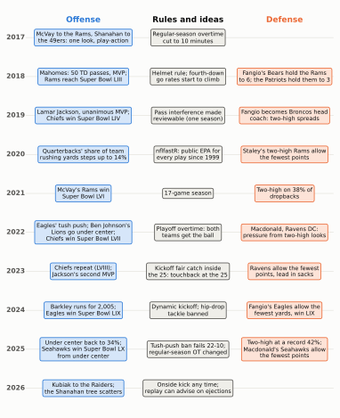
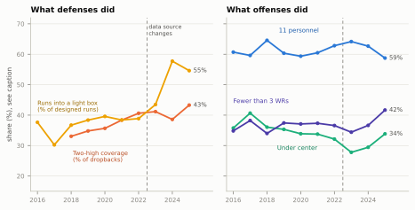
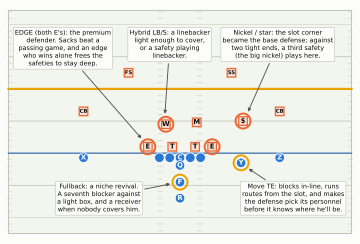
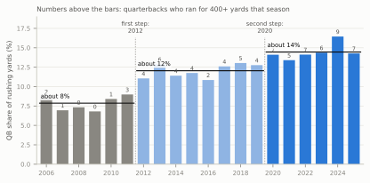
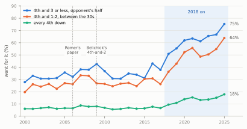
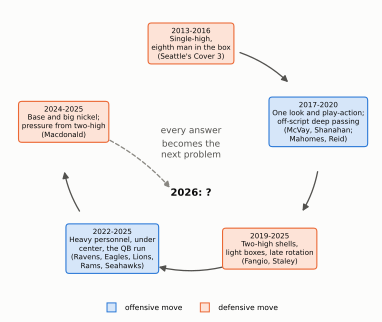

The Modern Era: McVay, Mahomes, Two-High, and the Under-Center Comeback (2017-2025)
Nine seasons of move and counter-move: the play-action revival, Mahomes, the safeties who stayed deep, the offenses that got bigger to beat them, the quarterback who runs, the coaches who go for it, and the rules that shifted under all of it.
Show the Python (shared drawing helpers for this chapter)
import osimport reimport loggingimport numpy as npimport pandas as pdimport matplotlib.pyplot as pltfrom matplotlib.patches import FancyArrowPatch, Rectangle, FancyBboxPatchfrom matplotlib.lines import Line2Dfrom gridiron import Play, Player, offense, routes as r, show_animation, style, draw_markerimport gridiron.play as _gp# The throws in this chapter (deep overs and posts off play-action) are driven, not floated: about 26 yd/s._gp.BALL_SPEED =26.0logging.getLogger("matplotlib.font_manager").setLevel(logging.ERROR)style.apply()PDF = os.environ.get("RTG_FORMAT", "").lower() in ("pdf", "typst", "print")FIELD_W =160/3HALF = FIELD_W /2# 26.7 yards from the middle of the field to either sidelineTE_RING = style.LINE_TO_GAIN # gold rings for tight ends and fullbacks, as in Personnel Groupingsdef D(key, pos, d, w, label=None):"""A defender at (d, w): d yards past the line of scrimmage, w yards to the offense's right."""return Player(key, pos, "def", d, w, label=label)def O(key, pos, d, w, label=None):return Player(key, pos, "off", d, w, label=label)def line5():"""The five offensive linemen, unlabelled except the center."""return [p for p in offense("singleback") if p.key in ("LT", "LG", "C", "RG", "RT")]def no_numbers(ax):"""Remove the painted yard-line numbers (they sit where wide receivers and corners stand)."""for t inlist(ax.texts):if t.get_alpha() ==0.55: t.remove()def ruler(fld, play, fs=6.5, side="left"):"""Depth labels (yards past the line of scrimmage) down one edge of the window.""" ax = fld.ax x_edge = FIELD_W - fld.y1 +0.35if side =="left"else FIELD_W - fld.y0 -0.35for d inrange(5, 41, 5): y = play.los + dif fld.x0 +0.8<= y <= fld.x1 -0.8: ax.text(x_edge, y, f"{d}"+ (" yd"if d ==5else""), fontsize=fs, color=style.INK_2, ha=side, va="center", zorder=12, bbox=dict(boxstyle="round,pad=0.12", fc=style.SURFACE, ec="none", alpha=0.85))def pointer(fld, play, text, text_at, to, ha="center", fs=7.0):"""A labelled arrow from a text box to a spot on the field (both in (d, w) yards).""" tx, ty = fld.xy(*play.to_abs(*text_at)) px, py = fld.xy(*play.to_abs(*to)) fld.ax.annotate(text, xy=(px, py), xytext=(tx, ty), ha=ha, va="center", fontsize=fs, color=style.INK, zorder=12, arrowprops=dict(arrowstyle="-|>", color=style.INK_2, lw=0.9, shrinkB=6), bbox=dict(boxstyle="round,pad=0.25", fc=style.SURFACE, ec=style.BASELINE, lw=0.6))def say(fld, play, text, at, fs=7.0, color=None, ha="center", weight="normal"):"""Plain on-field text at (d, w), on a light patch so lines underneath don't cut it.""" x, y = fld.xy(*play.to_abs(*at)) fld.ax.text(x, y, text, ha=ha, va="center", fontsize=fs, color=color or style.INK, zorder=12, fontweight=weight, bbox=dict(boxstyle="round,pad=0.2", fc=style.SURFACE, ec="none", alpha=0.95))def box_outline(fld, play, w=(-8.0, 8.0), d=(0.0, 7.0)):"""A dashed rectangle around 'the box': tackle box plus a tight end on each side, out to ~7 yards.""" x0, y0 = fld.xy(*play.to_abs(d[0], w[0])) x1, y1 = fld.xy(*play.to_abs(d[1], w[1])) fld.ax.add_patch(Rectangle((min(x0, x1), min(y0, y1)), abs(x1 - x0), abs(y1 - y0), fill=False, ec=style.INK_2, lw=0.9, ls=(0, (4, 3)), zorder=2))def trim(ax):"""Drop text labels whose anchor lies outside the drawn window (players cropped out of view).""" x0, x1 =sorted(ax.get_xlim()) y0, y1 =sorted(ax.get_ylim())for t inlist(ax.texts): x, y = t.get_position()if t.get_transform() == ax.transData andnot (x0 <= x <= x1 and y0 <= y <= y1): t.remove()# ---------------------------------------------------------------- moments of a play, for printdef snapshot(play, t, ax=None, lateral=(-HALF, HALF), window=(-9.0, 28.0), width_in=6.5, notes=(), show_ruler=False):"""Everyone where he is at time t, with faint trails of where he has been and the ball's flight.""" pos = {k: play.position(k, t) for k in play.players} moved = [pl.moved(d=float(pos[k][0]), w=float(pos[k][1])) for k, pl in play.players.items()] q = Play([m for m in moved if m.side =="off"], [m for m in moved if m.side =="def"], los=play.los, ball_y=play.ball_y, to_go=play.to_go) q.highlights =dict(play.highlights) fld = q.draw(ax=ax, lateral=lateral, window=window, width_in=width_in, title=False) ax, ppy = fld.ax, fld.pts_per_yard() no_numbers(ax)if show_ruler: ruler(fld, play, fs=5.5) P =lambda d, w: fld.xy(*play.to_abs(d, w)) # noqa: E731 start = play._compile()[1]for k, pl in play.players.items():if pl.side =="off"and pl.pos notin ("WR", "TE", "RB", "QB", "FB"):continue pts = np.array([play.position(k, tt) for tt in np.linspace(start, t, 30)])if np.ptp(pts[:, 0]) + np.ptp(pts[:, 1]) <0.3:continue xs, ys = P(pts[:, 0], pts[:, 1])if pl.side =="off": ax.plot(xs, ys, color=style.OFFENSE, lw=1.0, alpha=0.45, zorder=3)else: ax.plot(xs, ys, color=style.DEFENSE, lw=1.3, ls=(0, (3, 2)), zorder=3) bx, by = P(*play.ball_position(t))for kind, _, t_rel in play.ball_events:if kind =="pass"and t > t_rel: sx, sy = P(*play.ball_position(t_rel)) ax.add_patch(FancyArrowPatch((float(sx), float(sy)), (float(bx), float(by)), arrowstyle="-|>", mutation_scale=8, color=style.BALL, lw=1.4, ls=(0, (2, 1.5)), zorder=9)) passes = [t_rel for kind, _, t_rel in play.ball_events if kind =="pass"]ifnot passes or t > passes[0]: draw_marker(ax, float(bx), float(by), "ball", "", ppy)for text, at in notes: say(fld, play, text, at, fs=6.3) trim(ax)return flddef strip(play, times, labels, lateral=(-HALF, HALF), window=(-9.0, 28.0), notes_at=None, width_in=6.5, ncols=2, extras=None):"""The print version of an animation: one panel per chosen moment.""" n =len(times) nrows =int(np.ceil(n / ncols)) pw = width_in / ncols h = nrows * (pw * (window[1] - window[0]) /abs(lateral[1] - lateral[0]) +0.32) fig, axes = plt.subplots(nrows, ncols, figsize=(width_in, h), squeeze=False)for ax in axes.flat[n:]: ax.axis("off")for i, (ax, t, lab) inenumerate(zip(axes.flat, times, labels)): fld = snapshot(play, t, ax=ax, lateral=lateral, window=window, notes=(notes_at or {}).get(i, ()), show_ruler=(i ==0))if extras and i in extras: extras[i](fld) ax.set_title(lab, fontsize=8.5, color=style.INK, loc="left") fig.tight_layout(h_pad=0.6, w_pad=0.4) h = [Line2D([], [], color=style.DEFENSE, lw=1.3, ls=(0, (3, 2)), label="Defender's path so far"), Line2D([], [], color=style.OFFENSE, lw=1.0, alpha=0.6, label="Offense's path so far"), Line2D([], [], color=style.BALL, lw=1.4, ls=(0, (2, 1.5)), label="The ball")] fig.legend(handles=h, loc="upper center", bbox_to_anchor=(0.5, 0.0), ncol=3, fontsize=7.5, frameon=False)return figdef catch_time(play, t_from):"""When the first pass arrives at its receiver (for the last panel of a strip).""" _, spot = play.pass_target_spot()returnnext(t for t in np.arange(t_from, 6.0, 0.02) if np.linalg.norm(play.ball_position(t) - spot) <0.3)
February 8, 2026, Super Bowl LX at Levi’s Stadium. The Seattle Seahawks beat the New England Patriots 29-13, and their running back, Kenneth Walker III, carried 27 times for 135 yards and was named the game’s MVP. Look at how Seattle got there and the season reads like a list of everything the NFL had supposedly left behind. On offense, the Seahawks took the snap with the quarterback under center, right behind the center, on more than half their plays, second-most in the league, and played with fewer than three wide receivers on more than half of them. On defense, they kept two safeties deep on about half of opponents’ dropbacks and still sacked Drake Maye six times in the Super Bowl.1 Nine seasons earlier, the most copied offense in football had three wide receivers on the field for almost every snap, and the defenses it faced usually played one deep safety and walked the other down toward the line as an extra run defender. Most of that 2017 picture had flipped by 2025. None of it was nostalgia. Each change was an answer to the change before it, and this chapter follows the chain, from Sean McVay’s first season in Los Angeles to the morning after Seattle’s title, and shows you how to see each link on a Sunday.
You’ll be able to…
Explain what Sean McVay and Kyle Shanahan built in 2017 (one personnel group, tight splits, motion, and play-action off the outside zone) and why it tore up the single-high defenses of the day.
Explain what Patrick Mahomes and Andy Reid added: a passing game borrowed from college and a quarterback whose best plays happened after the design broke down.
Explain the two-high counterrevolution, read its trend line (and say what the line does and doesn’t measure), and say what it cost defenses; then explain the offensive answer (the light-box run game, heavier personnel, and the under-center revival) by counting blockers and defenders on a diagram.
Name the positions that changed shape (slot corner, star safety, hybrid linebacker, move tight end, edge rusher, fullback) and say which move in the arms race each one answered.
Explain why the quarterback’s share of the running game climbed in two steps and stayed up, and why coaches started going for it on fourth down, with the numbers behind both.
List the rule changes of 2017-2026 that matter for strategy and describe where the game stands entering the 2026 season.
NoteYou’ll need
This chapter finishes the history of Part 11 and pulls threads from all over the book. One line each, with a link if you want to catch up:
Two-high and rotation (Disguise, Rotation, and Split-Field Coverage): a two-high shell has two safeties deep before the snap; a defense can stay there or rotate one safety down at the snap, so the shell you see isn’t always the coverage you get.
The box (A First Look at Defense): the defenders near the line who can stop a run. A light box has no more of them than the offense has blockers. Against the usual one-back offense (five linemen and a tight end) that means six or fewer, and that is the cut every number in this chapter uses.
Personnel (Personnel Groupings): two digits, backs then tight ends, so 11 personnel is one back, one tight end and three receivers, and 12 personnel swaps a receiver for a second tight end.
Play-action (Play-Action, Boots, and Screens): a pass that starts with a fake handoff, so defenders who read run step the wrong way.
Reading the diagrams: offense is blue circles (X, Y, Z, H receivers; Y and U tight ends; F a fullback; Q quarterback; R running back); defense is outlined squares (E and T ends and tackles; M the Mike, W the Will and S the Sam linebacker; $ the nickel back; CB corners; FS and SS safeties). Solid arrows are routes and runs, dashed arrows defenders’ movements, tees blocks. Gold rings mark tight ends and fullbacks, orange rings the defenders to watch, green rings the receiver to watch. A dashed rectangle marks the box. The dark blue line is the line of scrimmage and the orange line the line to gain.
The shape of the era
Start with the whole board. The figure below lays the nine seasons out the way Dynasties and Counterpunches laid out the seventeen before them: the offensive side on the left, the defensive side on the right, rules and new ideas in the middle. Read down a column to follow one side, then across: the answers land a season or two after the moves they answer.
Show the Python
EVENTS = {"off": [(2017, "McVay to the Rams, Shanahan to\nthe 49ers: one look, play-action"), (2018, "Mahomes: 50 TD passes, MVP;\nRams reach Super Bowl LIII"), (2019, "Lamar Jackson, unanimous MVP;\nChiefs win Super Bowl LIV"), (2020, "Quarterbacks' share of team\nrushing yards steps up to 14%"), (2021, "McVay's Rams win\nSuper Bowl LVI"), (2022, "Eagles' tush push; Ben Johnson's\nLions go under center;\nChiefs win Super Bowl LVII"), (2023, "Chiefs repeat (LVIII);\nJackson's second MVP"), (2024, "Barkley runs for 2,005;\nEagles win Super Bowl LIX"), (2025, "Under center back to 34%;\nSeahawks win Super Bowl LX\nfrom under center"), (2026, "Kubiak to the Raiders;\nthe Shanahan tree scatters")],"mid": [(2017, "Regular-season overtime\ncut to 10 minutes"), (2018, "Helmet rule; fourth-down\ngo rates start to climb"), (2019, "Pass interference made\nreviewable (one season)"), (2020, "nflfastR: public EPA for\nevery play since 1999"), (2021, "17-game season"), (2022, "Playoff overtime: both\nteams get the ball"), (2023, "Kickoff fair catch inside\nthe 25: touchback at the 25"), (2024, "Dynamic kickoff; hip-drop\ntackle banned"), (2025, "Tush-push ban fails 22-10;\nregular-season OT changed"), (2026, "Onside kick any time;\nreplay can advise on ejections")],"def": [(2018, "Fangio's Bears hold the Rams\nto 6; the Patriots hold them to 3"), (2019, "Fangio becomes Broncos head\ncoach: two-high spreads"), (2020, "Staley's two-high Rams allow\nthe fewest points"), (2021, "Two-high on 38% of\ndropbacks"), (2022, "Macdonald, Ravens DC:\npressure from two-high looks"), (2023, "Ravens allow the fewest\npoints, lead in sacks"), (2024, "Fangio's Eagles allow the\nfewest yards, win LIX"), (2025, "Two-high at a record 42%;\nMacdonald's Seahawks allow\nthe fewest points")],}COLS = {"off": (0.235, style.OFFENSE, style.OFFENSE_TINT), "mid": (0.555, style.INK_2, "#efeee9"),"def": (0.85, style.DEFENSE, style.DEFENSE_TINT)}fig, ax = plt.subplots(figsize=(6.6, 8.2))ax.set_xlim(0, 1)ax.set_ylim(2026.6, 2016.2)ax.axis("off")for yr inrange(2017, 2027): ax.axhline(yr, xmin=0.06, xmax=1.0, color=style.GRID, lw=0.6, zorder=0) ax.text(0.0, yr, str(yr), ha="left", va="center", fontsize=7.5, color=style.INK_2, fontweight="bold")for key, title in (("off", "Offense"), ("mid", "Rules and ideas"), ("def", "Defense")): x, col, _ = COLS[key] ax.text(x, 2016.55, title, ha="center", va="center", fontsize=9, color=col if key !="mid"else style.INK, fontweight="bold")for key, items in EVENTS.items(): x, col, tint = COLS[key]for yr, text in items: ax.text(x, yr, text, ha="center", va="center", fontsize=6.4, color=style.INK, linespacing=1.15, bbox=dict(boxstyle="round,pad=0.32", fc=tint, ec=col, lw=0.8), zorder=3)plt.show()

Figure 58.1: The era at a glance, 2017-2026. Offense (blue, left: the moves and the results they won), defense (orange, right) and the rules and ideas in between (grey, centre). Every box sits on its season’s row; a Super Bowl is listed under the season it ended (Super Bowl LX, played in February 2026, belongs to 2025). Notice the rhythm: the offenses of 2017-2019 come first, the two-high defenses of 2019-2022 answer them, and the heavy, under-center offenses of 2022-2025 answer those.
Three forces push on every row.
The passing game kept its head start. Every offense in this chapter is a way of throwing better: off a run fake, after a motion, out of a broken play.
Defenses learned to protect the sky. The era’s biggest defensive change was a decision about where to put the two safeties, and its cost (fewer defenders near the line) shaped what offenses did next.
Information got cheap. Public models and full-time analysts changed how coaches decided, most visibly on fourth down.
Now the details, in roughly the order they happened.
2017: two young coaches and an old idea
Picture the league McVay walked into. In 2016 the most imitated defense in football was still Pete Carroll’s Seattle Cover 3: a single deep safety in the middle, press corners, and a strong safety rolled down near the line as an eighth run defender (the anatomy is in The Cover 3 Family). Carroll’s former assistants ran it in Jacksonville and Atlanta, and the Falcons reached Super Bowl LI with it. Offenses, for their part, had mostly moved to the shotgun (about 64 percent of plays in 2016) and spread the field with three receivers.
The Los Angeles Rams were the league’s worst offense that year. They scored 224 points, fewest in the NFL. In January 2017 they hired Sean McVay, Washington’s 30-year-old offensive coordinator, as head coach, the youngest in the modern NFL. A few weeks later San Francisco hired Kyle Shanahan, the Atlanta coordinator whose offense had just led the league in scoring. The two had coached together in Washington from 2010 to 2013 under Shanahan’s father, Mike, and both spoke the same football language: the outside-zone run game and the bootleg passing game that Mike Shanahan and Gary Kubiak had built in Denver in the 1990s (Play-Action, Boots, and Screens traces the tree). In McVay’s first season the Rams scored 478 points, the most in the league.2
What did McVay do? Five things, none of them new on its own.
One personnel group. By 2018 the Rams used 11 personnel on about 93 percent of their snaps, against a league median of about 65. A defense learns a lot from substitutions; when there aren’t any, it learns nothing (Constraint Theory and Sequencing calls this the illusion of complexity).
The quarterback under center. In 2018 Jared Goff took the snap under center on about 61 percent of plays, the most in the league, while the league as a whole did so on about 36 percent.3 Why? With his back to the defense and the back running at full speed past him, a run and a run fake look identical for a beat longer than they do from the shotgun.
The outside zone as the base play. The whole line steps sideways, and linebackers have to run with it or get cut off (Zone Running).
Play-action and boots built to look exactly like it. Goff threw off a run fake on about a third of his dropbacks, more than any quarterback in the league.
Tight splits and motion. The receivers lined up close to the formation (the condensed formation of Spread and Modern Formations), close enough to block a linebacker on a run and to release into routes from the same spot on a pass. The Rams’ signature was jet motion: a receiver sprinting across the formation at the snap, a threat to take a sweep that the linebackers had to respect whether he got the ball or not (Motion and Shifts as Weapons).
One habit tied the five together. The Rams often huddled quickly and got to the line with time left before the helmet radio cut off at 15 seconds on the play clock, so McVay could look at the defense’s alignment and keep talking to Goff until it did. “Sometimes he talks all the way up until 15 seconds,” Goff said in 2017.4 The look stayed the same; the play inside it could be fine-tuned late.
Here is why those five things together beat the defense of the day. A single-high defense gets its eighth run defender by bringing a safety down, and it asks its linebackers and that safety to attack the run the moment they see it. Against an offense whose runs and passes looked different, that was a fine bet. Against an offense whose runs and passes looked the same for the first second, it meant three defenders stepping forward on every play-action pass, and their steps opened a space on the field that the McVay offense was built to throw into: the intermediate middle, 10 to 18 yards downfield, behind the linebackers and in front of the deep defenders.
Show the Python
def pa_cover3(): off = line5() + [O("QB", "QB", -1.9, 0, "Q"), O("RB", "RB", -7.0, 0.0, "R"), O("Y", "TE", -0.7, 4.8, "Y"), O("Z", "WR", -1.5, 9.0, "Z"), O("X", "WR", -0.7, -10.0, "X"), O("H", "WR", -1.5, -6.6, "H")] dfn = [D("WDE", "DE", 1.0, -4.4, "E"), D("WDT", "DT", 1.0, -0.7, "T"), D("SDT", "DT", 1.0, 2.35, "T"), D("SDE", "DE", 1.0, 5.6, "E"), D("WILL", "WILL", 4.5, -2.6), D("MIKE", "MIKE", 4.5, 1.6), D("SS", "SS", 6.0, 6.8), D("NB", "NB", 4.5, -7.4, "$"), D("LCB", "CB", 1.6, -10.6, "CB"), D("RCB", "CB", 2.4, 10.2, "CB"), D("FS", "FS", 13.0, 0.0)] p = Play(off, dfn, los=30, to_go=10)for k in ("LT", "LG", "C", "RG", "RT"): # outside-zone steps to the right p.block(k, pts=[(0.3, 1.5)]) p.block("Y", pts=[(0.4, 1.0)])for k in ("WDT", "SDT", "SDE"): p.rush(k, pts=[(-0.4, 0.6)], speed=1.5) p.path("WDE", [(0.3, -2.6)], absolute=True, speed=2.5) # the backside end squeezes on the fake... p.path("WDE", [(-3.5, -4.0)], absolute=True, speed=4.5, delay=0.5) # ...then chases the boot, late p.path("RB", [(-4.8, 2.4)], absolute=True, speed=4.2) # the back arrives at the mesh... p.path("RB", [(-2.4, 6.6)], absolute=True, speed=6.0) # ...and carries out the fake p.path("QB", [(-4.6, 1.8)], absolute=True, speed=4.0) # open, meet the back, extend the ball... p.path("QB", [(-6.8, -3.5), (-7.2, -6.5)], absolute=True, speed=6.0) # ...then boot away from the fake p.route("Z", r.path((6.5, 0.5), (11.0, -12.0), (14.0, -22.0)), speed=7.8) p.route("X", r.path((8.0, 2.0), (24.0, 3.0))) p.route("H", r.path((3.0, 3.0), (4.0, 7.0)), speed=6.5) p.pass_to("Z", t=2.6) p.path("MIKE", [(3.0, 3.4)], absolute=True, speed=3.2) # run-first defenders step up... p.path("MIKE", [(8.0, -1.0)], absolute=True, speed=5.0, delay=0.25) # ...and recover too late p.path("WILL", [(3.4, -0.6)], absolute=True, speed=3.2) p.path("WILL", [(7.5, -4.0)], absolute=True, speed=5.0, delay=0.25) p.path("SS", [(3.6, 6.6)], absolute=True, speed=4.0) p.drop("NB", (4.5, -12.5), speed=5.5) # curl-flat player widens with H p.drop("LCB", (14.0, -12.5), speed=5.0); p.drop("LCB", (22.0, -12.8), speed=5.5) # bail to the deep third p.drop("RCB", (16.0, 12.8), speed=6.5) p.drop("FS", (17.0, -1.0), speed=3.5) p.highlight("Y", color=TE_RING) p.highlight("MIKE", "WILL", "SS", color=style.DEFENSE) p.highlight("Z")return ppa = pa_cover3()PA_T = [0.0, 0.8, 2.6, round(float(catch_time(pa, 2.6)) +0.04, 2)]if PDF: strip(pa, PA_T, ["Snap · condensed 11, eight in the box", "+0.8 s · the mesh: three defenders bite","+2.6 s · Z crosses behind them: throw", f"+{PA_T[3]:.1f} s · the catch, {pa.pass_target_spot()[1][0]:.0f} yards deep"], lateral=(-18.0, 18.0), window=(-9.5, 25.5), notes_at={1: [("run fake", (-7.6, 5.4))], 3: [("nobody left\nin the hole", (18.6, -5.2))]}) plt.show()else: show_animation(pa, times=PA_T)
Figure 58.2: Play-action against single-high, 2018 style (simulated; an illustration of the idea, not a specific Rams play). Snap: 11 personnel in a condensed set, the quarterback under center; the defense is in Cover 3 with eight in the box, the strong safety (SS) rolled down and the corners pressed. +0.8 s, the mesh: the line and the back show outside zone to the right, the quarterback has turned his back to the defense and put the ball in the back’s belly, and the three run-first defenders (orange rings: both linebackers and the strong safety) step toward the fake, as they must against a real run. +2.6 s: the quarterback has pulled the ball and booted left, away from the fake. Z, from the right side, has crossed behind the linebackers; on the left, X’s vertical route has taken the corner deep and H’s flat route has pulled the nickel back ($) wide. The unblocked end is chasing but still a few yards away, and the quarterback throws. Last panel: Z catches the deep over about 11 yards downfield near the left numbers, in the hole between the flat and the deep third.
Follow the three ringed defenders. None of them does anything wrong. The Mike and Will see the line step and the back run toward the sideline, and they come up to fill their gaps; the strong safety, the eighth man the defense brought down for exactly this, attacks the edge. In Cover 3 those three also guard the middle of the field against passes, and by the time they see the quarterback pull the ball, they are four or five yards out of position. That leaves one defender on the boot side to handle two receivers: the nickel, whose zone runs from the flat up to the curl. H’s flat route is under him and Z’s deep over is above him, a high-low read. He takes the flat, as his rules tell him to, and the quarterback throws over him, in front of the corner who is bailing deep with X. The same logic killed the Tampa 2 Mike in the last chapter: find the defenders with two jobs and make them do the wrong one first.
ImportantWhy it exists: the McVay-Shanahan offense
What it solves. A defense reads the offense in a fixed order: personnel, formation, then the first step of the play. McVay’s offense made all three tell the defense the same thing every time (11 personnel, a tight formation, an outside-zone step), so the defense had to defend the run honestly and was a beat late on everything else. Motion added a last-second problem, because a defense has to adjust to it and every adjustment leaks information.
What it costs. It needs a run game good enough to fear; play-action against a defense that doesn’t respect the run is just a slow dropback with the quarterback’s back turned. It asks receivers to block linebackers, and the boot leaves the backside end unblocked. And a defense that can make the run fake not matter (by keeping its middle defenders deep no matter what) takes the best part of the offense away. That is exactly what happened next.
NoteFilm room: Rams 2018 — the high point, and the first answers
The 2018 Rams went 13-3, scored 527 points, beat Kansas City 54-51 on a Monday night in November, and reached Super Bowl LIII. Then the league’s two most respected defensive minds got a look at them. On December 9 in Chicago, Vic Fangio’s Bears held the Rams to 6 points and intercepted Goff four times. Eight weeks later, in the Super Bowl, Bill Belichick’s Patriots held them to 3 and won 13-3.5
What to notice: in both games, watch the Rams’ zone runs before you watch their passes. Against the condensed 11-personnel sets, the Bears lined up six defenders on the line of scrimmage with one linebacker behind them (a “6-1” front), and the Patriots borrowed the same six-man front for the Super Bowl. With every Rams interior lineman covered, a defender lined up on or just outside him, the outside zone lost its double teams: each lineman had to reach a defender already shaded to the play side, the hardest block in football, and nobody got free to climb to a linebacker. Todd Gurley ran 11 times for 28 yards in Chicago. Without a run to fear, the fake stopped pulling anyone forward, and the Rams nearly stopped calling it: play-action on 11 of Goff’s 48 dropbacks against the Bears, against about 36 percent all season. New England added more zone coverage than it had played all year. The 2018 Bears were not yet a two-high defense, but the idea underneath their plan (cover up the interior so the zone has no combinations, and stop the run with the front instead of an eighth man) is the foundation of what came next, and Brandon Staley, then coaching the Bears’ outside linebackers, carried it to the Rams in 2020. Belichick’s plan has its own diagram in Belichick and Game-Plan Football.
Shanahan’s 49ers took a slightly different road to the same place. Where McVay lived in 11 personnel, Shanahan used a fullback, Kyle Juszczyk, and a tight end, George Kittle, who could each block and catch, so he could show heavy personnel and still throw. His 2019 team went 13-3 and reached Super Bowl LIV. The case study The Shanahan Tree follows that offense and the coaches it produced, who by 2025 were calling plays all over the league.
Mahomes, Reid, and the play after the play
The other offensive revolution of 2018 came from Kansas City. Andy Reid, a head coach since 1999 and a West Coast offense coach from Mike Holmgren’s Green Bay staffs, had spent two decades building passing games out of short, timed throws and screens. In 2017 the Chiefs traded up to draft Patrick Mahomes tenth overall out of Texas Tech, where he had played in Kliff Kingsbury’s Air Raid, the pass-everything college system of four- and five-receiver sets and a few concepts practised endlessly. Mahomes sat for almost all of his rookie season (he started only the final regular-season game), then in 2018 threw for 5,097 yards and 50 touchdowns and was named MVP. The Chiefs scored 565 points, the most in the league.6
Two things made the Reid-Mahomes offense different from McVay’s.
It borrowed from college, openly. Reid’s staffs lifted whole ideas from college film: the RPO (a run with a pass option attached, decided by reading one defender; RPOs), the shovel option, jet motion, and the Air Raid concepts Mahomes already knew. In 2017, the season before Mahomes started, Reid had gone back to Alex Smith’s college film at Utah and built RPOs, zone reads and shovel passes into the offense: “we went back and kind of looked at some of the stuff he had done in college and was familiar with,” he said.7 Where McVay made every play look like one run, Reid made his offense look like many different college offenses, often in the same game.
Its best plays were often not the plays that were called. Mahomes’s gift was the off-script play (Quarterback Play): the play after the design breaks down, when the quarterback escapes the rush, keeps his eyes downfield and throws from an angle no defense practises against, including, once, left-handed. A defense can study a play-caller’s tendencies. It cannot study a scramble.
McVay’s offense punished a defense that put too many players near the line. Mahomes punished a defense that left any receiver alone deep. Against both, the natural answer was the same: keep more players back, with everything in front of them. By 2021, by this book’s count from nflverse charting data, defenses played a two-high coverage against the Chiefs on about 46 percent of labelled dropbacks, the third-highest share against any offense and well above the league’s 38 percent.8 The Chiefs’ answer to that answer was patience: fewer deep shots, more of the short game Reid had always loved, Travis Kelce underneath, and Mahomes’s legs when the rush came. The whole league drifted the same way. The average pass travelled about 8.3 yards in the air in 2016 and 2017 and about 7.8 from 2021 on, while the share of throws aimed 20 or more yards downfield stayed near 12 percent: offenses still took their shots, and threw shorter in between.9 For the Chiefs, patience worked. From the 2019 season to the 2024 season Kansas City played in five of six Super Bowls and won three of them.10
NoteFilm room: Super Bowl LIV, February 2, 2020 — third-and-15
The Chiefs trailed San Francisco 20-10 with 7:13 left in the fourth quarter and faced third-and-15 at their own 35. The call was “2-3 Jet Chip Wasp.” Mahomes drifted about 14 yards behind the line, held the ball while Tyreek Hill ran the “Wasp” route, and threw it 44 yards to Hill at the San Francisco 21. Kansas City scored three touchdowns in the last seven minutes and won 31-20.11
Figure 58.3: ‘2-3 Jet Chip Wasp’ against Cover 3, Super Bowl LIV (reconstructed; the offense moves left to right). Charted facts: shotgun with two tight ends (Y is Travis Kelce, gold rings), Hill (H, green ring) and Sammy Watkins (X) on Kelce’s side; four rushers; Cover 3 behind them; Mahomes under pressure about 14 yards deep when he threw, 3.8 seconds after the snap. Hill’s route is drawn from the published descriptions: a deep crosser’s stem at the one deep safety (FS, orange ring), then a sharp break back toward the sideline, away from him and behind the corner. The other routes and the defenders’ paths are an illustration chosen to match those facts, not traced from film. The full frame-by-frame version is in the Chiefs case study.
What to notice: both halves of the offense in one snap. The design is Reid’s: a route that walks the one deep safety toward the middle and then leaves him, against a defense playing deep and soft on third-and-long, and a protection (the “chip”: the back bumping the edge rusher on his way out) built to buy time. (“2-3 Jet” the Chiefs haven’t explained; in many West Coast playbooks a number plus “Jet” names a protection.) The time is Mahomes’s: he holds the ball past the moment most quarterbacks would check it down. One deep safety could not cover the whole width of the field against that, and the cheapest fix was to put a second safety back there. The full call, word by word, is in Andy Reid and the Kansas City Chiefs.
The two-high counterrevolution
By 2019 defensive coaches had two problems: play-action that pulled their middle defenders forward, and quarterbacks who punished any single-covered receiver deep. Both problems had the same root. A single-high defense commits its eighth defender to the run before the snap, and modern offenses had learned to make that commitment cost something on every play.
The answer that swept the league is what this book calls the two-high counterrevolution: defenses that line up with two safeties deep, play a two-deep coverage (quarters, Cover 6, Cover 2) or rotate out of that shell only at the snap, and accept fewer defenders near the line in exchange. It is a “counter” revolution because Seattle’s era had pulled safeties down toward the line, and this pushed them back.
Its roots are in college. As Disguise, Rotation, and Split-Field Coverage tells it, quarters defenses at Michigan State, TCU and Nick Saban’s schools spent the 2000s learning to play the run with safeties at 10 to 12 yards. In the NFL the coach most associated with it is Vic Fangio, a defensive assistant for more than thirty years, the Bears’ coordinator from 2015 to 2018 and, at 60, a first-time head coach in Denver from 2019. His protégé Brandon Staley took the system to the Rams in 2020, and with Aaron Donald inside and Jalen Ramsey moving around the secondary, the Rams allowed the fewest points in the league. Coaches from Fangio’s and Staley’s staffs (Joe Barry, Sean Desai, Ejiro Evero, Chris Shula) spread the approach from there, and Fangio himself coordinated the Eagles’ defense to a Super Bowl title in the 2024 season.12
The idea has three parts.
Keep a lid on the field. Two deep safeties take away the explosive pass, and because they sit at 10 to 14 yards reading the receivers in front of them, they also sit right where McVay’s crossers and Mahomes’s deep shots wanted to go. The run fake loses most of its prize, because a quarters safety doesn’t read the back. He reads the receiver in front of him, usually the tight end or slot (the “#2” receiver of Quarters and Match Coverage). If #2 runs a route, the safety covers him; only if #2 blocks does the safety come down to play the run. Hold that rule in mind, because it is exactly what offenses learned to exploit.
Let the front hold the run, and fit it late with the safeties. With both safeties back, the box usually has six defenders against six blockers (five linemen and a tight end). The front has to win its own fights, and the Fangio tree built one for the job: the tite front (Odd and Hybrid Fronts), a nose on the center and two linemen on the tackles’ inside shoulders. It walls off the inside gaps, keeps blockers off the two linebackers, and pushes runs outside, toward the safeties and the edge players. The safeties then come downhill to make the tackle after the runner is past the line, at five or six yards instead of two.
Don’t tell the quarterback. A two-high shell is the best starting point for disguise, because either safety can rotate down at the snap and turn it into a single-high coverage, or neither does (post-snap rotation in 06-06). The quarterback who reads “two-high” before the snap may be wrong a second later.
The second part is the bargain. Run Fits and Box Math draws it (an inside-zone run into six defenders, with both safeties arriving from 12 yards after the runner has four or five yards), so here is what it costs and what it buys, in numbers.
The cost first. In 2025, early-down runs against six or fewer box defenders averaged about 4.6 yards; against seven or more, about 4.1. In expected points, runs against light boxes were still slightly negative on average (about −0.04 EPA per play), just less negative than runs against heavier boxes (about −0.09).13 Now what it buys. Against two-high coverages, 6.8 percent of 2025 dropbacks gained 20 yards or more; against single-high coverages, 9.2 percent. Every season since 2018 shows a gap in the same direction, and it has grown, from about an eighth fewer big plays in 2018 to about a quarter fewer in 2025.14 A defense that gives up half a yard per run to take away a few 20-yard completions a game is making a trade the numbers like, as long as its front can hold.
Here is the whole era in the data.
Show the Python (the era in numbers: coverage, box counts, personnel and formation, 2016-2025)
from gridiron.data import nfl, pbpSEASONS =list(range(2016, 2026))PB = pbp(SEASONS, columns=["season", "season_type", "game_id", "play_id", "posteam", "play_type", "down","shotgun", "qb_dropback", "qb_scramble", "epa"])PB = PB[(PB["season_type"] =="REG") & PB["play_type"].isin(["pass", "run"]) & PB["down"].notna()]PART = pd.concat([nfl().load_participation([y]).to_pandas()[ ["nflverse_game_id", "play_id", "offense_personnel", "defenders_in_box", "defense_coverage_type"]]for y in SEASONS], ignore_index=True)M = PB.merge(PART, left_on=["game_id", "play_id"], right_on=["nflverse_game_id", "play_id"])def count(s, positions):"""Players at some positions in a personnel string ('1 RB, 1 TE, 3 WR' through 2022; every roster position from 2023, e.g. '1 C, 2 G, 1 QB, 1 RB, 2 T, 1 TE, 3 WR')."""ifnotisinstance(s, str):return np.nanreturnsum(int(n) for n, pos in re.findall(r"(\d+)\s+([A-Z]+)", s) if pos in positions)M["rb"] = M["offense_personnel"].map(lambda s: count(s, {"RB", "FB"}))M["te"] = M["offense_personnel"].map(lambda s: count(s, {"TE"}))M["wr"] = M["offense_personnel"].map(lambda s: count(s, {"WR"}))K = M[M["rb"].notna() & M["te"].notna()]# post-snap coverage on labelled dropbacks (2018 on; no labels in 2016-2017)CV = M[(M["qb_dropback"] ==1)].copy()CV["c"] = CV["defense_coverage_type"].astype(str).str.upper()CV = CV[CV["c"].isin(["COVER_0", "COVER_1", "COVER_2", "2_MAN", "COVER_3", "COVER_4", "COVER_6", "COVER_9"])]CV["two"] = CV["c"].isin(["COVER_2", "2_MAN", "COVER_4", "COVER_6"])RUNS = M[(M["play_type"] =="run") & (M["qb_scramble"] ==0) & M["defenders_in_box"].notna()]TREND = pd.DataFrame({"two_high": CV.groupby("season")["two"].mean() *100,"light_box": RUNS.groupby("season")["defenders_in_box"].apply(lambda s: (s <=6).mean()) *100,"p11": K.groupby("season").apply(lambda g: ((g["rb"] ==1) & (g["te"] ==1)).mean()) *100,"under_center": (1- PB.groupby("season")["shotgun"].mean()) *100,"lt3wr": K.groupby("season")["wr"].apply(lambda s: (s <3).mean()) *100,}).reindex(SEASONS)
Show the Python
fig, axes = plt.subplots(1, 2, figsize=(6.6, 3.4), sharey=True)T = TRENDpanels = [ (axes[0], "What defenses did", [("two_high", "Two-high coverage", style.DEFENSE), ("light_box", "Runs into a light box", style.SERIES[3])]), (axes[1], "What offenses did", [("p11", "11 personnel", style.OFFENSE), ("under_center", "Under center", style.SERIES[2]), ("lt3wr", "Fewer than 3 WRs", style.SERIES[6])]),]for ax, title, series in panels: ax.axvline(2022.5, color=style.MUTED, lw=0.9, ls=(0, (4, 3)), zorder=1)for col, lab, c in series: s = T[col].dropna() ax.plot(s.index, s.values, marker="o", ms=3.2, color=c, lw=1.8) ax.text(s.index[-1] +0.25, s.values[-1], f"{s.values[-1]:.0f}%", fontsize=6.8, color=style.INK_2, va="center") ax.set_title(title, fontsize=9) ax.set_xlim(2015.6, 2026.4) ax.set_xticks([2016, 2018, 2020, 2022, 2024]) ax.tick_params(labelsize=7) ax.grid(axis="x", visible=False) ax.set_ylim(15, 72)axes[0].set_ylabel("share (%), see caption", fontsize=7.5)axes[0].text(2022.6, 70, "data source\nchanges", fontsize=6.3, color=style.INK_2, va="top")# direct labels, placed by hand where each line has roomaxes[0].text(2018.1, T.loc[2018, "two_high"] -4.6, "Two-high coverage\n(% of dropbacks)", fontsize=6.6, color=style.DEFENSE_DARK, linespacing=1.1, va="top")axes[0].text(2016.0, T.loc[2016, "light_box"] +3.6, "Runs into a light box\n(% of designed runs)", fontsize=6.6, color="#9a6a00", linespacing=1.1)axes[1].text(2018.7, 67.2, "11 personnel", fontsize=6.9, color=style.OFFENSE_DARK)axes[1].text(2018.6, 28.6, "Under center", fontsize=6.9, color="#12805a")axes[1].text(2016.0, 44.0, "Fewer than 3 WRs", fontsize=6.9, color=style.SERIES[6])fig.tight_layout(w_pad=1.2)plt.show()

Figure 58.4: The arms race in five lines, 2016-2025 (regular seasons; this book’s calculation from nflverse data). Each line is a share of something different. Left, what defenses did: two-high coverages (Cover 2, 2-Man, quarters and Cover 6) as a share of dropbacks with a charted coverage, labelled after the snap, so a two-high shell that rotates to one deep safety counts as single-high (no labels exist for 2016-2017); and the share of designed runs that met six or fewer defenders in the box. Right, what offenses did, as shares of runs and passes: 11 personnel, fewer than three wide receivers, and snaps not in the shotgun (almost all under center; a few pistol). The dashed line marks the change of charting source (Next Gen Stats through 2022, FTN from 2023) behind every line except under center, which comes from the play-by-play itself. Notice that the lines don’t move together: two-high climbs (with a 2024 dip that Next Gen Stats’ own series doesn’t show), the box barely changes until 2023, personnel stays put until 2025, and under center slides for six seasons before turning back.
Read it left to right, the way the coaches lived it.15
Two-high climbs, and it is measured after the snap. In the nflverse charting, two-high coverages went from about 33 percent of dropbacks in 2018 to about 43 percent in 2025, with a dip in 2024; Next Gen Stats’ own series has no dip and a record 42.0 percent in 2025, every defense above 30.16 Both count the coverage the defense played, not the shell it showed, and no free public series records the shell (Disguise, Rotation, and Split-Field Coverage explains why). On Sunday you count the shell; this line is the coverage.
The boxes empty, late. Light boxes weren’t new: in 2016, 38 percent of designed runs already met six or fewer, mostly against three-receiver sets. The dip in 2017 is the eighth-man era at its height. The share sat near 37 to 40 percent from 2018 to 2022, then passed half in 2024 and 2025 (all three FTN seasons, so not the source switch, though a counting change can’t be ruled out).
Personnel stayed put until 2025. 11 personnel held at 60 to 65 percent of plays for nine seasons: for most of this era the fight was over alignment, motion and the safeties, not over who was on the field. Only in 2025 did 11 personnel fall and snaps with fewer than three receivers jump to 42 percent.
Under center slid for six seasons, then turned. In 2017 the league was under center on about 41 percent of plays. That fell almost every season, to 28 percent in 2023, when not one team was under center on 45 percent of its snaps (FTN’s own charting shows the same drop, so the low is real). By 2025 it was back to 34 percent, the 2018 level, with six teams at 45 percent or more.
The left panel is the counterrevolution. The right panel is the counter to the counter.
NoteFilm room: Eagles 2024 — a two-high defense that charts as single-high
Vic Fangio’s first Philadelphia defense is the best test of what the trend line can and can’t tell you. By every run-defense measure it was the light-box system at full strength: opponents’ designed runs met six or fewer in the box about two-thirds of the time, among the highest rates in the league, and the Eagles allowed the fewest yards and the fewest EPA per designed run (Run Fits and Box Math has the film room on the front that made it work). Yet in the coverage charting, the 2024 Eagles played a two-high coverage after the snap on only 33.7 percent of opponents’ dropbacks, 27th in the league. The 2023 Ravens, the other great defense of the two-high era, were 22nd.17
What to notice: that is not a contradiction. Fangio’s system is built to start in two-high and decide at the snap, and a safety who rotates down at the snap turns the play into a single-high coverage in the charting. On an Eagles defensive snap, count the deep safeties when the offense is set, then again one second after the snap. The difference between those two counts is the disguise, and it is the part of this defense that no public chart measures.
CautionCommon misconception
“Two-high is a soft, prevent-style defense.” It looks soft before the snap, with safeties 12 yards deep and corners off. But it was built to move: a quarters safety becomes an alley run defender the moment the tight end in front of him blocks, a rotating safety can arrive as a robber at the snap, and the shell disguises single-high coverages and pressures as often as it is a coverage itself. The 2020 Rams, 2023 Ravens and 2024 Eagles each allowed the fewest points or yards in the league. Soft defenses don’t do that.
The offense answers: bigger, tighter, and under center
If the defense keeps two safeties deep and six in the box, the offense’s first question is simple arithmetic. How many blockers can it put against those six?
From 11 personnel the answer is six: five linemen and a tight end. Six against six means every defender is blocked if everyone wins, but nobody is left over to handle a missed block, and the runner has to make the last defender miss. There are two ways to get a seventh. One keeps 11 personnel and makes the quarterback the extra man, with a read or an RPO that leaves one defender unblocked on purpose and reads him; that is the Ravens’ and Eagles’ way, and it gets its own section below. The other is simpler: take a receiver off the field and put on a second tight end, or a fullback. Seven blockers against six. The defense has three choices, and none of them is free:
Stay in its nickel, two-high shell and be outnumbered in the box. The offense runs.
Bring a safety down, at the snap or before it, to get to seven. Now it is single-high again, and the offense is back in McVay’s world, with play-action behind him.
Substitute bigger players, a third linebacker or a third safety. Now the offense can spread them out and throw at the linebacker covering a tight end, the move tight end’s dilemma from Dynasties and Counterpunches.
That arithmetic is the light-box run game: an offense built to run into the boxes two-high defenses leave, with enough blockers that the defense must concede the run or give up its shell. Here are the two eras’ pictures side by side.
Figure 58.5: Nine seasons apart (illustrative alignments). Left, a 2018-style snap: 11 personnel in a condensed set, the quarterback under center, against a single-high defense with the strong safety (SS) rolled down, eight defenders in the box (dashed rectangle) and one safety deep. Right, a 2025-style snap: 12 personnel (two tight ends, gold rings) under center, against a nickel two-high defense with six in the box and two safeties deep. In 2018 the defense outnumbers the offense’s blockers near the line (eight defenders, six blockers) and the offense throws behind them; in 2025 the offense outnumbers the defense (seven blockers, six defenders) and dares it to bring a safety down.
Offenses took the second and third answers seriously, and the 2025 numbers in the trend chart are the result. 12 personnel reached 24 percent of plays, its highest share in the decade of data, and 13 personnel (three tight ends) 5 percent. Defenses answered in kind: they played base defense on 29.7 percent of snaps, up from a low of 20.5 percent in 2023.18 Some offenses went further than others. The 2025 Rams, McVay’s team, the same coach who had lived in 11 personnel in 2018, used three tight ends on about 31 percent of their snaps. Shanahan’s 49ers had a fullback on the field for 37 percent of theirs.19 And the light-box run itself became a weapon: Saquon Barkley’s 2,005 yards for the 2024 Eagles came mostly against six or fewer in the box (about 61 percent of his carries, at 5.9 yards a carry).20
Motion: making the shell decide early
There was a second answer to two-high, and it worked on the safeties’ timing rather than the box count. A two-high defense wants to decide at the snap. Motion at the snap, a receiver still running across the formation when the ball is snapped, forces it to decide while he is moving: a safety who rotates to follow him has shown the coverage, and a defense that stays put has let a fast player get a running start at a new spot. Pre-snap shifts and motion of every kind went from 43 percent of plays in 2018 to a record 63.9 percent in 2025 in PFF’s count. Motion at the moment of the snap, which ESPN charts separately, went from about 4 percent of plays in 2017 to about 22 percent in 2023, and Mike McDaniel’s 2023 Dolphins did it on 59 percent of their plays early that season, the most ESPN had recorded.21Motion and Shifts as Weapons has the whole family and why the different counts disagree.
Why under center?
The trend chart’s green line is the other half of the answer, and it is the one most fans notice first, because it changes what the quarterback looks like before the snap. This book calls it the under-center revival: after six seasons of decline, the quarterback taking the snap directly behind the center on about a third of plays again. The league number is only back where it was in 2018. What changed is who does it and how much: the 2025 Rams were under center on 59 percent of their plays and the Seahawks on 53, with the Bills, Lions, Bears and 49ers between 46 and 50 percent; two seasons earlier, no team had reached 45. On a broadcast, that concentration is what you notice.
Why would an offense give up the shotgun, the alignment that lets the quarterback see the whole defense and throw quickly? Four reasons, each tied to the two-high defense.
The run gets better. From under center the back takes the ball already running downhill; from the shotgun he starts beside the quarterback and has to run sideways first.
The fake gets better. The quarterback turns his back to hand off or fake, and the linebackers and safeties can’t see the ball. From the shotgun the fake is in plain view.
The safety has to decide. This is the big one. Remember the quarters safety’s rule: he reads the tight end in front of him, and if the tight end blocks, he comes down to fit the run. Heavy, under-center personnel turns the receiver he reads into a blocker on every run, and makes the play-action pass start with that same block. For a full second the run and the fake look identical to him. If he comes down, the pass goes behind him. If he waits, the run gets its five yards.
The pre-snap picture tells the defense less. A back offset beside a shotgun quarterback hints at the run’s direction; a back seven yards behind a quarterback under center can go anywhere.
The cost is real: the quarterback sets up later and sees the defense later, so on obvious passing downs the shotgun still wins. The revival is a first-and-second-down weapon.
Show the Python
def pa_two_high(): off = line5() + [O("QB", "QB", -1.9, 0, "Q"), O("RB", "RB", -7.0, 0.0, "R"), O("Y", "TE", -0.7, 4.8, "Y"), O("U", "TE", -0.7, -4.8, "U"), O("X", "WR", -1.5, -12.5, "X"), O("Z", "WR", -1.5, 11.5, "Z")] dfn = [D("WDE", "DE", 1.0, -6.0, "E"), D("WDT", "DT", 1.0, -1.2, "T"), D("SDT", "DT", 1.0, 2.35, "T"), D("SDE", "DE", 1.0, 6.0, "E"), D("WILL", "WILL", 4.5, -2.0), D("MIKE", "MIKE", 4.5, 2.2), D("NB", "NB", 5.5, -9.4, "$"), D("LCB", "CB", 7.0, -12.5, "CB"), D("RCB", "CB", 7.0, 11.5, "CB"), D("FS", "FS", 12.5, -7.0), D("SS", "SS", 12.5, 7.0)] p = Play(off, dfn, los=30, to_go=10)for k in ("LT", "LG", "C", "RG", "RT"): p.block(k, pts=[(0.3, 1.4)]) p.block("Y", pts=[(0.5, 1.0)]); p.block("U", pts=[(0.4, 1.2)])for k in ("WDT", "SDT", "SDE", "WDE"): p.rush(k, pts=[(-0.4, 0.5)], speed=1.5) p.path("RB", [(-4.8, 2.4)], absolute=True, speed=4.2) # the back arrives at the mesh... p.path("RB", [(-2.4, 6.6)], absolute=True, speed=6.0) # ...and carries out the fake p.path("QB", [(-4.6, 1.8)], absolute=True, speed=4.0) # open, meet the back, extend the ball... p.path("QB", [(-7.8, 0.6)], absolute=True, speed=3.6) # ...then finish the drop and set p.route("Z", r.path((12.0, 0.5), (24.0, -7.0)), speed=7.8) p.route("X", r.path((24.0, 0.5))) p.pass_to("Z", t=2.6) p.path("MIKE", [(2.8, 3.4)], absolute=True, speed=3.0) p.path("MIKE", [(7.0, 1.5)], absolute=True, speed=4.5, delay=0.2) p.path("WILL", [(3.0, -0.4)], absolute=True, speed=3.0) p.path("WILL", [(7.0, -3.0)], absolute=True, speed=4.5, delay=0.2) p.path("SS", [(11.6, 6.6)], absolute=True, speed=2.0) # reads the tight end: he blocks, so run! p.path("SS", [(6.5, 6.0)], absolute=True, speed=6.5) # triggers to fit the alley... p.path("SS", [(9.5, 5.0)], absolute=True, speed=4.5, delay=0.15) # ...and turns back, late p.drop("RCB", (9.5, 12.2), speed=2.4); p.drop("RCB", (18.0, 11.5), speed=5.0) # outside leverage on Z p.drop("LCB", (10.0, -12.5), speed=3.0); p.drop("LCB", (20.0, -12.0), speed=5.5) p.drop("FS", (16.0, -6.0), speed=3.5) p.drop("NB", (6.5, -9.0), speed=2.0) p.highlight("Y", "U", color=TE_RING) p.highlight("SS", color=style.DEFENSE) p.highlight("Z")return ppa2 = pa_two_high()PA2_T = [0.0, 0.8, 2.6, round(float(catch_time(pa2, 2.6)) +0.04, 2)]if PDF: strip(pa2, PA2_T, ["Snap · 12 under center vs two-high", "+0.8 s · the mesh: SS fits the 'run'","+2.6 s · Z breaks behind him: throw", f"+{PA2_T[3]:.1f} s · the catch, {pa2.pass_target_spot()[1][0]:.0f} yards deep"], lateral=(-17.5, 17.5), window=(-9.0, 27.0), width_in=6.3, notes_at={1: [("run fake", (-7.4, 5.6))], 3: [("where the\nsafety was", (15.0, 9.0))]}) plt.show()else: show_animation(pa2, times=PA2_T)
Figure 58.6: The payoff, simulated: play-action from 12 personnel under center against a two-high (quarters) defense with six in the box (an illustration of the idea, not a specific team’s play). Snap: two tight ends attached (gold rings), the quarterback under center; two safeties at 12 yards. +0.8 s, the mesh: both tight ends block, the quarterback has his back to the defense and the ball in the back’s belly, and the back carries out the outside-zone fake to the right. The strong safety (SS, orange ring) reads the tight end in front of him; the tight end is blocking, so by his rule it is a run, and in a light box he is the man who must fit it, so he comes down hard. +2.6 s: the quarterback has finished his drop and throws; Z has pushed his route to 12 yards, past the corner’s outside leverage, and broken to the post, into the space the strong safety just left. Last panel: the catch, about 22 yards downfield, with the safety still turning around. Against a light box the run is good enough that the safety has to come; the under-center fake makes the pass look like that run.
Compare this play with the 2018 one. The geometry is the same: a run fake pulls a defender who guards the middle forward, and the ball goes behind him. What changed is who gets pulled. In 2018 it was the linebackers and a box safety, who were always going to attack the run. In 2025 it is a deep safety, who is only attacking the run because the box is light and the offense has more blockers than the defense has bodies.
CautionCommon misconception
“The under-center comeback means football is going back to the 1990s.” The pictures rhyme, but almost everything inside them is new. The 1990s offense lined up under center because that was where quarterbacks stood; the 2025 offense does it to beat a specific defense, and it still runs RPOs, motion at the snap and spread passing concepts from the same alignment. The 1990s defense played an eighth man in the box against two tight ends; the 2025 defense keeps two safeties deep against them and fits the run from 12 yards. History doesn’t repeat here. It gets folded into the next scheme.
Positions mutate
Over nine seasons, six positions changed shape, and every change answers something earlier in this chapter. The map below puts them on one field.
Show the Python
off = line5() + [O("QB", "QB", -1.9, 0, "Q"), O("FB", "FB", -4.5, 0.0, "F"), O("RB", "RB", -7.0, 0.0, "R"), O("Y", "TE", -1.5, 9.5, "Y"), O("X", "WR", -0.7, -15.0, "X"), O("Z", "WR", -0.7, 15.5, "Z")]dfn = [D("WDE", "DE", 1.0, -5.0, "E"), D("WDT", "DT", 1.0, -1.2, "T"), D("SDT", "DT", 1.0, 2.35, "T"), D("SDE", "DE", 1.0, 5.0, "E"), D("MIKE", "MIKE", 4.8, 2.6), D("WILL", "WILL", 4.5, -2.2), D("NB", "NB", 5.0, 9.8, "$"), D("LCB", "CB", 6.5, -15.0, "CB"), D("RCB", "CB", 6.5, 15.5, "CB"), D("FS", "FS", 12.5, -8.0), D("SS", "SS", 12.5, 8.0)]pm = Play(off, dfn, los=35, to_go=10)pm.highlight("Y", "FB", color=TE_RING)pm.highlight("WDE", "SDE", "NB", color=style.DEFENSE)pm.highlight("WILL", color=style.DEFENSE)f = pm.draw(lateral=(-HALF +0.3, HALF -0.3), window=(-12.5, 22.2), width_in=6.3)no_numbers(f.ax)pointer(f, pm, "EDGE (both E's): the premium\ndefender. Sacks beat a\npassing game, and an edge\nwho wins alone frees the\nsafeties to stay deep.", (16.3, -18.2), (1.6, -5.4), fs=6.4)pointer(f, pm, "Nickel / star: the slot corner\nbecame the base defense; against\ntwo tight ends, a third safety\n(the big nickel) plays here.", (16.9, 15.2), (5.6, 10.2), fs=6.4)pointer(f, pm, "Hybrid LB/S: a linebacker\nlight enough to cover,\nor a safety playing\nlinebacker.", (16.9, -1.6), (5.2, -2.4), fs=6.4)pointer(f, pm, "Move TE: blocks in-line, runs\nroutes from the slot, and makes\nthe defense pick its personnel\nbefore it knows where he'll be.", (-7.0, 17.6), (-1.9, 9.9), fs=6.4)pointer(f, pm, "Fullback: a niche revival.\nA seventh blocker against\na light box, and a receiver\nwhen nobody covers him.", (-7.0, -12.6), (-4.6, -0.6), fs=6.4)plt.show()

Figure 58.7: Where the positions changed, 2017-2025 (illustrative alignment). Offense in 21 personnel with a move tight end (Y) detached in the slot, off the line, and a fullback (F) in the backfield (gold rings); defense in nickel with two deep safeties, its two edge rushers (E), its hybrid linebacker (here the Will, W) and its nickel or star (the $) ringed. Each label says what the position became and which move in the arms race made it that way.
Take them one at a time.
The slot corner, and the nickel as the base defense. When offenses went to three receivers on most snaps, the third receiver needed a third cornerback, the slot cornerback or nickel back. Through this era defenses had five or more defensive backs on the field for roughly two-thirds to three-quarters of snaps (about 66 percent in 2017 and 78 percent in 2023, then back to 69 percent in 2025 as offenses got heavier).22 The nickel back stopped being a substitute and became a starter, and the “base” 4-3 or 3-4 became the package a team played on a minority of snaps (A First Look at Defense charts it).
The star, and the big nickel. Then the offenses got heavier again, and a 185-pound slot corner stuck in the box against two tight ends became a target. The answer was a safety in the nickel spot: the big nickel, whose fifth defensive back is a third safety big enough to fit a run and fast enough to cover a tight end. The names are dialect: many staffs call the nickel spot the “star” whoever plays it (Staley’s 2020 Rams put a corner, Jalen Ramsey, there), and “big nickel” says the player in it is a safety. The best of them, such as Kyle Hamilton in Mike Macdonald’s Ravens defense or Brian Branch in Detroit, line up deep, in the slot, on the line and in the box, sometimes in the same series. Seattle had played a linebacker-sized strong safety, Kam Chancellor, near the line a decade earlier, in its base defense; the two-high era moved that kind of player into the nickel spot and made it standard.23
The hybrid linebacker and safety. Linebackers had to cover more and more space: tight ends, backs in the flat, crossers behind them. Teams drafted lighter, faster linebackers and moved safeties down to play the position. Not every experiment worked: Isaiah Simmons, drafted eighth overall in 2020 as a “positionless” linebacker-safety, never found a home in Arizona’s defense.24 But the direction held: with six in the box, the two linebackers have more ground to cover against the run and the pass than anyone in the old 4-3.
The move tight end. The receiving tight end of the last chapter became the centre of offenses: Travis Kelce in Kansas City, George Kittle in San Francisco, Mark Andrews in Baltimore, and a younger generation such as Brock Bowers, who set the record for catches by a rookie in 2024.25 He is the reason 12 personnel worked as an answer to two-high: one personnel group that can be a seven-blocker run formation or a spread passing formation, with the defense choosing its players first.
The edge rusher, the premium defender. The edge rusher, the hybrid edge of the last chapter, became the most valuable defender in the game, for a reason this chapter can now state precisely: a two-high defense needs pressure without blitzing, because every blitzer comes out of the coverage it is trying to keep. The market priced it: in 2025, Myles Garrett, T.J. Watt and Micah Parsons all signed contracts worth about $40 million a year or more, the richest ever for non-quarterbacks, and Garrett then set the single-season sack record with 23.26
The fullback, a niche revival. The fullback came back, in small numbers, in the offenses that wanted a seventh blocker against light boxes: Shanahan’s 49ers (Kyle Juszczyk, signed in 2017 to what was then by far the richest fullback contract in the league), the Ravens (Patrick Ricard), and the 2025 Seahawks.27 League-wide, two-back personnel stayed around 7 or 8 percent of plays. The revival is in what he does, not how often he plays: the modern fullback motions, catches passes and lines up as a tight end, so a defense can’t treat him as a lead blocker and load the box.
The quarterback runs, in two steps
Dynasties and Counterpunches ended the 2012 read-option wave with a line: the wave receded; the tide came in later. The data say something slightly more interesting. What receded was the designed read-option, a few teams’ scheme. The quarterback as a runner never went back down.
The second rise came with Lamar Jackson. The Ravens drafted him with the last pick of the first round in 2018, he took over as the starter midseason, and in 2019 they rebuilt the offense around him under a newly promoted coordinator, Greg Roman: a run game with a quarterback who was a real runner on every snap, heavy personnel, and option reads from the pistol and the shotgun. In 2019 Jackson ran for 1,206 yards, then the record for a quarterback, threw 36 touchdown passes, and was the unanimous MVP; the Ravens ran for 3,296 yards, the most by any team in NFL history.28 He won a second MVP in 2023.
Then the others. Jalen Hurts led the Eagles to two Super Bowls (the 2022 and 2024 seasons) with designed runs, scrambles and the tush push, the quarterback sneak with teammates shoving from behind that the Eagles turned into a near-automatic first down (Red Zone, Goal Line, and Short Yardage has it). Josh Allen, a 6-foot-5 quarterback with a cannon for an arm, ran for double-digit touchdowns in multiple seasons, won the MVP in 2024 and, by the end of 2025, had more career rushing touchdowns than any quarterback in history. Jayden Daniels ran for more than 850 yards as a rookie in 2024 and took Washington to the NFC Championship Game.29
Show the Python (how much of the running game quarterbacks do, 2006-2025)
fig, ax = plt.subplots(figsize=(6.6, 3.0))ERAS = [((2006, 2011), style.MUTED, "about 8%"), ((2012, 2019), "#8fb4e3", "about 12%"), ((2020, 2025), style.OFFENSE, "about 14%")]for (y0, y1), c, lab in ERAS: yrs = [y for y in QB_SHARE.index if y0 <= y <= y1] ax.bar(yrs, QB_SHARE.loc[yrs].values, color=c, width=0.72, zorder=2) m = QB_SHARE.loc[yrs].mean() ax.hlines(m, y0 -0.45, y1 +0.45, color=style.INK, lw=1.1, zorder=3) ax.text(y0 -0.35, m +0.45, lab, fontsize=6.8, color=style.INK, ha="left", va="bottom", zorder=4, bbox=dict(boxstyle="round,pad=0.12", fc=style.SURFACE, ec="none", alpha=0.85))for yr, v in QB_SHARE.items(): ax.text(yr, v +0.35, f"{int(QB400.get(yr, 0))}", ha="center", fontsize=6.3, color=style.INK_2)for yr, txt in ((2012, "first step:\n2012"), (2020, "second step:\n2020")): ax.annotate(txt, xy=(yr -0.5, 17.6), xytext=(yr -0.5, 17.6), fontsize=6.6, color=style.INK_2, ha="center", va="center") ax.axvline(yr -0.5, ymax=0.86, color=style.MUTED, lw=0.7, ls=(0, (2, 2)), zorder=1)ax.set_title("Numbers above the bars: quarterbacks who ran for 400+ yards that season", fontsize=7.5, loc="left", color=style.INK_2, fontweight="normal")ax.set_xlim(2005.4, 2025.6)ax.set_ylim(0, 19)ax.set_xticks(range(2006, 2026, 2))ax.tick_params(labelsize=7)ax.set_ylabel("QB share of rushing yards (%)", fontsize=7.5)ax.grid(axis="x", visible=False)plt.show()

Figure 58.8: Quarterbacks’ share of their teams’ rushing yards, 2006-2025: every run by a team’s quarterbacks (players with 150 or more pass attempts that season), including designed runs, scrambles and sneaks, as a share of all rushing yards, league-wide, in the regular season. The bars fall into three plateaus, shaded from grey to blue, and the horizontal lines are each plateau’s average: about 8 percent through 2011; a first step in 2012, the read-option season, to about 12 percent, which held even after the read-option itself faded; and a second step in 2020 to about 14 percent, peaking at 16.5 percent in 2024. Jackson’s record 2019 is one team, and it barely moves a league-wide bar; the second step came as running quarterbacks spread across the league. The numbers above the bars count quarterbacks who ran for 400 yards or more. Source: nflverse play-by-play.
Read the chart as a staircase.30 Through 2011, quarterbacks gained about 8 percent of their teams’ rushing yards. In 2012 that stepped up to about 12 percent and stayed there for eight seasons, though the designed read-option faded from most playbooks within two: the quarterbacks coming into the league could run, and they did. The second step came in 2020, to about 14 percent; in 2024 quarterbacks gained one rushing yard in six, and nine of them ran for 400 yards, against four in 2012 and four in Jackson’s 2019. So the question is not why the quarterback run “stuck this time”, but why it took a second step, and why that one held.
The arithmetic got better for it. A quarterback who is a real running threat is an extra blocker’s worth of math, the “plus one” of Option Football: one defender who would otherwise chase the back has to stay home for him. Against six in the box, that turns six-against-six into a numbers advantage without changing personnel. The two-high counterrevolution made the running quarterback more valuable, not less.
The offenses were built around them. The 2012 wave grafted college plays onto NFL offenses for a season. Jackson’s Ravens, Hurts’s Eagles and Allen’s Bills designed their whole offense around a quarterback who ran, and paid him to be that player for a decade.
They learned to run like quarterbacks. The modern running quarterback slides, gets out of bounds and picks his moments. Designed quarterback runs actually peaked league-wide around 2020-2022 and drifted down after; what held up is the quarterback as a runner of every kind, scrambling when the coverage is good, sneaking on third-and-1, keeping on the read when the edge chases.
The short-yardage sneak became nearly automatic. A ban on the tush push failed 22 to 10 in May 2025, two votes short, and in 2026 no team even proposed one.31
How did defenses answer? With old tools, each with its cost. A spy, a defender who shadows the quarterback, comes out of the rush or the coverage. Rushers who stay in their lanes to keep him in the pocket rush less well. And a safety brought down to account for him rebuilds the eighth man in the box, the picture play-action was made to beat. Each picks which problem the defense would rather have (Run Fits and Box Math shows the run-fit version).
NoteFilm room: Ravens 2019 — an offense designed for a runner
The 2019 Ravens went 14-2 and led the league in points. Watch them for what the opponents had to do. Every running play has two possible ball carriers, so the edge defender on the side away from the back can’t chase him; he has to stay home for Jackson. Every play-action pass carries the threat that Jackson will run it himself, so the defense’s last line, the safeties, have to think about the run longer than they want to. The Ravens added to the problem with personnel: two and three tight ends (Mark Andrews, Hayden Hurst, Nick Boyle) and a fullback-tight end (Patrick Ricard), far more often than the league did.
What to notice: count the defenders who are watching Jackson rather than the back at the mesh point, the moment the ball sits in the back’s belly and Jackson decides whether to give it or keep it. If it’s one, the Ravens have the numbers somewhere else. The full case study is The Ravens’ Option Run Game, which treats 2019-2025 as a closed era: John Harbaugh was fired in January 2026 and is now the Giants’ head coach.
The coaches start trusting the math
The last chapter ended with an argument: David Romer’s 2006 paper and Brian Burke’s public models said coaches kicked on fourth down far too often, and coaches mostly ignored them. In this era they stopped ignoring them, and you can watch the moment it happened.
fig, ax = plt.subplots(figsize=(6.6, 3.3))ax.axvspan(2017.5, 2025.5, color=style.OFFENSE_TINT, alpha=0.5, lw=0)for col, lab, c in (("opp_short", "4th and 3 or less,\nopponent's half", style.SERIES[0]), ("short_mid", "4th and 1-2,\nbetween the 30s", style.SERIES[1]), ("all", "every 4th down", style.SERIES[2])): ax.plot(GO.index, GO[col], marker="o", ms=3.0, color=c, lw=1.8, label=lab.replace("\n", " ")) ax.text(2025.5, GO.loc[2025, col], f" {GO.loc[2025, col]:.0f}%", fontsize=6.8, color=style.INK_2, va="center")ax.legend(loc="upper left", fontsize=6.8, frameon=False, handlelength=1.6, borderaxespad=0.3)for yr, txt, y in ((2006, "Romer's\npaper", 50), (2009, "Belichick's\n4th-and-2", 50)): ax.axvline(yr, color=style.MUTED, lw=0.7, ls=(0, (2, 2))) ax.text(yr, y, txt, fontsize=6.4, color=style.INK_2, ha="center", va="bottom", bbox=dict(boxstyle="round,pad=0.15", fc=style.SURFACE, ec="none"))ax.text(2021.5, 84, "2018 on", fontsize=7, color=style.OFFENSE_DARK, ha="center")ax.set_xlim(1999.5, 2027.3)ax.set_ylim(0, 90)ax.set_xticks(range(2000, 2026, 5))ax.tick_params(labelsize=7)ax.set_ylabel("went for it (%)", fontsize=7.5)ax.grid(axis="x", visible=False)plt.show()

Figure 58.9: How often NFL teams went for it on fourth down, 2000-2025, in competitive situations (the offense’s win probability between 20 and 80 percent, more than two minutes left in the half; a ‘go’ is a run or pass rather than a punt or field-goal try). Three cuts: fourth-and-1 or 2 between the 30-yard lines; fourth-and-3 or less in the opponent’s half; and every fourth down. For eighteen seasons nothing moved, through Romer’s paper (2006) and Belichick’s famous fourth-and-2 (2009). From 2018 every line roughly doubles. Source: nflverse play-by-play.
The flat stretch is the striking part.32 From 2000 to 2017, on fourth-and-1 or 2 between the 30s in a close game, teams went for it about a quarter of the time, in almost every season. Romer’s paper didn’t move it; Belichick’s 2009 decision, and the uproar after it, didn’t move it. Then, in five seasons, the rate doubled, and by 2025 teams went on about 64 percent of those downs and on about three-quarters of short fourth downs in the opponent’s half. Why then?
The models went public, and onto the broadcast. Ben Baldwin and Sebastian Carl’s nflfastR, released in 2020, put expected points and win probability for every play since 1999 in anyone’s hands, free (the ancestor of the nflverse data in this book). Fourth-down calculators appeared on websites (Baldwin’s own, built on nflfastR, in 2020) and then on broadcasts (the NFL’s Next Gen Stats Decision Guide, made for broadcasters, from the 2021 season), and a coach who punted on fourth-and-1 at midfield heard about it the next morning from people with numbers.33
A champion did it on the biggest stage. Doug Pederson’s 2017 Eagles were among the most aggressive teams in the league on fourth down, and on fourth-and-goal from the 1 at the end of the first half of Super Bowl LII they ran the “Philly Special,” a direct snap to the running back, a pitch to the tight end and a touchdown pass to the quarterback, Nick Foles. They beat New England 41-33.34
New coaches with new habits. The next wave of head coaches (Brandon Staley’s 2021 Chargers, Dan Campbell’s Lions, Nick Sirianni’s Eagles) went for it constantly; by this book’s count, Campbell’s Lions went for it in competitive situations more than any other team in 2021, 2022 and 2023.
NoteFilm room: Lions at 49ers, NFC Championship Game, January 28, 2024
The decision that tested the new orthodoxy. Detroit led San Francisco 24-7 at halftime. Early in the third quarter, leading 24-10, the Lions faced fourth-and-2 at the 49ers’ 28, inside field-goal range, and went for it; Jared Goff’s pass fell incomplete. Late in the fourth quarter, now trailing 27-24, they faced fourth-and-3 at the 49ers’ 30, where a field goal would have tied the game, and went for it again; another incompletion. San Francisco won 34-31.35
What to notice: how the argument had changed. Both calls were near coin flips on the numbers: ESPN’s model leaned toward going for it by a fraction of a point on each (90.5 percent against 90.3 on the first; 39.1 against 38.8 on the second), and Next Gen Stats leaned the same way.36 In 2009 Belichick’s go was a scandal because coaches didn’t do that. In 2024 Campbell’s were a scandal because they failed; nobody argued that a coach shouldn’t go for it at the opponent’s 28. Build the model yourself in Win Probability and Fourth Downs.
The same logic spread to early-down play-calling (Tendencies, PROE, and Charting measures it): the go-for-it decision’s lesson that a call is right or wrong before the snap, on its probabilities, not after it, on its result.
The rules underneath, 2017-2026
The rules kept moving too. Most of the era’s changes were about safety, and some of those changed strategy more than any scheme did. One table, with the chapter that owns each rule:37
Season
Rule
What it changed
2017
Regular-season overtime cut from 15 to 10 minutes
More ties possible, and a long first-possession drive leaves the other team less time to answer (Clock and Game Management)
2018
Use of the helmet: lowering the head to initiate contact with the helmet is a foul, for any player
Kickoff returns come back; a tackling technique outlawed
2025
Dynamic kickoff made permanent, touchback to the 35; regular-season overtime gives both teams a possession; replay assist can correct some fouls; tush-push ban fails 22-10
Kickoff returns on about three-quarters of kicks; field position shifts toward the offense
2026
Onside kick may be declared at any time, even when leading; a kickoff from the 50 that goes out of bounds is a touchback at the 20; a fourth “floater” in the receiving team’s setup zone; replay officials may be consulted on ejections; the tush push still legal and no 18-game season38
Two patterns in the table matter for how you watch. First, kickoffs changed more than any other part of the game: five rule changes in nine seasons (2018, 2023, 2024, 2025 and 2026), and by 2025 a kickoff was returned about three times out of four, where in 2023 it was returned about one time in five. Starting field position, and so the fourth-down and two-minute math, moved with it. Second, the league kept protecting the passing game indirectly. The helmet rule, the hip-drop ban and replay assist are safety rules, but every one of them makes defenders a little more careful. And the 2022 and 2025 overtime changes took games away from the coin toss and gave them to the offenses: a touchdown on the first possession no longer ends the game, so the other offense always gets its chance to answer. Nothing in nine seasons tilted the field back toward defense; the defenses had to do that with scheme.
Where the game stands entering 2026
Which brings us back to Seattle.
NoteFilm room: Seahawks 2025 — the whole era on one team
Mike Macdonald built his reputation as the Ravens’ defensive coordinator in 2022 and 2023 (fewest points in the league, most sacks), with defenses that start from two-high shells and disguise everything after, including simulated pressures that show six rushers and send four. He became Seattle’s head coach in 2024.39
In 2025 he hired Klint Kubiak, Gary Kubiak’s son and a Shanahan-tree coach, as offensive coordinator, and the Seahawks played the other half of this chapter: under center on more than half their snaps, fewer than three wide receivers on more than half, a fullback on the field more than most teams, outside zone and play-action. They went 14-3, allowed the fewest points in the league, and beat New England 29-13 in Super Bowl LX, with Jason Myers kicking a Super Bowl-record five field goals and Uchenna Nwosu returning an interception for a touchdown. The defense played two-high on about 52 percent of opponents’ dropbacks, the third-highest rate in the league.40
What to notice: that the same team is the era’s answer on both sides. On defense, a two-high shell that hides pressure, so the light box isn’t a gift. On TV it looks like this: two safeties deep and a linebacker walked up into a gap as if to blitz; at the snap the linebacker comes and a defensive lineman drops into the spot he left, or the linebacker drops and a safety comes, and four rush either way (07-03’s two-high simulated-pressure figure draws one). On offense, a heavy, under-center run game built to beat exactly that kind of defense. When you watch the 2026 Seahawks, watch whether the offense keeps its shape without the coordinator who built it: Kubiak left after one season to become the Raiders’ head coach, and Brian Fleury, from Shanahan’s staff, replaced him.
The coaching map that Seattle sits on is changing fast. Kubiak to Las Vegas; Mike McDaniel, fired in Miami, now the Chargers’ offensive coordinator; Mike LaFleur, McVay’s 2025 coordinator, now Arizona’s head coach; John Harbaugh in New York; a fourth straight new offensive coordinator in Philadelphia. The Shanahan tree, which in 2025 supplied play-callers all over the league, is scattering into new branches, and the 2026 staffs are not the 2025 ones.41 Label every staff with its season when you read about these teams.
NoteGo deeper: check the 2026 season yourself
This chapter stops at the end of 2025, but the season you are watching is already in the data. FTN’s charting in nflverse is updated every week during the season, so under-center snaps (qb_location), motion and play-action for 2026 can be counted now; the participation file with box counts and coverage labels arrives only after the season ends.42 The code above each trend chart takes a list of seasons, so the under-center line is a one-line change away from including this year:
Show the Python
from gridiron.data import nflftn = nfl().load_ftn_charting([2025, 2026]).to_pandas()(ftn["qb_location"].eq("U").groupby(ftn["season"]).mean() *100).round(1) # under center, % of charted plays
The pattern: an arms race you can watch
Step back and the nine seasons make a loop, the same rhythm the last chapter found, only faster.
Show the Python
NODES = [ ("2013-2016", "Single-high,\neighth man in the box", "Seattle's Cover 3", "def"), ("2017-2020", "One look and play-action;\noff-script deep passing", "McVay, Shanahan;\nMahomes, Reid", "off"), ("2019-2025", "Two-high shells,\nlight boxes, late rotation", "Fangio, Staley", "def"), ("2022-2025", "Heavy personnel, under\ncenter, the QB run", "Ravens, Eagles, Lions,\nRams, Seahawks", "off"), ("2024-2025", "Base and big nickel;\npressure from two-high", "Macdonald", "def"),]fig, ax = plt.subplots(figsize=(6.6, 5.6))ax.set_xlim(-1.62, 1.62)ax.set_ylim(-1.32, 1.32)ax.set_aspect("equal")ax.axis("off")n =len(NODES)ang = [np.pi /2- i *2* np.pi / n for i inrange(n)]R =1.0pts = [(R * np.cos(t) *1.18, R * np.sin(t)) for t in ang]for i inrange(n -1): ax.add_patch(FancyArrowPatch(pts[i], pts[i +1], connectionstyle="arc3,rad=-0.28", arrowstyle="-|>", mutation_scale=13, color=style.INK_2, lw=1.3, shrinkA=50, shrinkB=50, zorder=1))ax.add_patch(FancyArrowPatch(pts[-1], (-0.16, -0.30), connectionstyle="arc3,rad=-0.15", arrowstyle="-|>", mutation_scale=13, color=style.MUTED, lw=1.3, ls=(0, (3, 2)), shrinkA=50, shrinkB=4, zorder=1))for (x, y), (yrs, what, who, side) inzip(pts, NODES): ec, fc = (style.OFFENSE, style.OFFENSE_TINT) if side =="off"else (style.DEFENSE, style.DEFENSE_TINT) ax.text(x, y, f"{yrs}\n{what}\n({who})", ha="center", va="center", fontsize=7.2, color=style.INK, linespacing=1.2, zorder=3, bbox=dict(boxstyle="round,pad=0.45", fc=fc, ec=ec, lw=1.1))ax.text(0, 0.12, "every answer\nbecomes the\nnext problem", ha="center", va="center", fontsize=9, color=style.INK_2, linespacing=1.3)ax.text(0, -0.32, "2026: ?", ha="center", va="center", fontsize=10, color=style.INK, fontweight="bold")ax.legend(handles=[ Line2D([], [], marker="s", ls="", ms=9, markerfacecolor=style.OFFENSE_TINT, markeredgecolor=style.OFFENSE, label="offensive move"), Line2D([], [], marker="s", ls="", ms=9, markerfacecolor=style.DEFENSE_TINT, markeredgecolor=style.DEFENSE, label="defensive move")], loc="lower center", bbox_to_anchor=(0.5, -0.04), ncol=2, fontsize=7.5, frameon=False)plt.show()

Figure 58.10: The arms race of 2013-2025 as a loop. Each box is a move; each solid arrow is the answer it provoked, and the boxes alternate offense, defense, offense. Start at the top: Seattle’s single-high defense put an eighth man in the box; McVay and Shanahan’s play-action punished him, and Mahomes punished anyone left alone deep; two-high defenses took away both and emptied the box; offenses answered with heavier personnel, the quarterback run and the snap from under center; and defenses answered that with base and big-nickel packages and pressure disguised inside a two-high shell. The dashed arrow points to the open question entering 2026: what beats that?
The loop is the best single tool this chapter can give you, because it tells you what to look for next. Each box was a sensible answer to the box before it, and each created a weakness the next one attacked. The defense of 2025 (two-high, with base personnel and disguised pressure ready for heavy offenses) is an answer to heavy offenses. So the obvious question for 2026 is the one the last chapter already asked: what does a heavy offense do when the defense matches it with big players? It spreads them out. A team that lines up in 12 personnel against a base defense and then splits its tight ends wide is asking a linebacker to cover a receiver, the Patriots’ dilemma of 2011, fourteen years later. Whether that, or something nobody has thought of, is the next arrow is what the 2026 season will tell you.
TipWatch for it on Sunday: arms-race spotting
Pick one game and find one link of the loop in it: one offensive trend, and the defensive counter you can see against it.
Before the first snap, set your baseline. What personnel does the offense open with, and is the quarterback under center or in the shotgun? Count the deep safeties: one or two?
On first and second down, count the box. Six or fewer with two safeties deep is a two-high, light-box defense. Is the offense running into it, and is the run getting five yards?
If the run is working, watch the safeties. Does one start walking down before the snap, or sprinting down at the snap? That is the defense giving up its shell. Now watch for play-action behind him.
Count the tight ends and backs. Two tight ends or a fullback on first down is the heavy answer. Does the defense match with a third linebacker or a third safety? If it does, does the offense then split a tight end out wide against a linebacker?
Watch the quarterback when the pocket breaks. Does he run, and does the defense have a spy or a rusher who stays home for him?
On fourth-and-short in the opponent’s half, predict before the coach decides. In 2025 teams went for it about three times in four in that situation. Did this coach?
By halftime, name the link. “The offense is running heavy into two-high boxes, and the defense just started rotating a safety down” is one. Write it down and see whether it changes in the second half.
Predict the play
TipPredict the play 1: the safety who keeps creeping down (2019)
Figure 58.11: 2019, first-and-10 at midfield. A Shanahan-style offense in 21 personnel (fullback F and tight end Y, gold rings) under center; the receivers are in tight splits. It has run outside zone to the right three times this quarter for 5, 7 and 6 yards. The defense is a 4-3, single-high, and the strong safety (SS, orange ring) has crept down to about 6 yards, just outside the Sam linebacker (S) and the tight end: eight defenders are in the box (dashed rectangle). The Mike and Will are at 4.5 yards, eyes on the backfield; the Sam is outside the tight end.
The offense shows the same look a fourth time. What’s the call, and where does the ball go?
TipAnswer
The play-action pass off the same outside-zone look, and the ball goes where the creeping safety and the linebackers used to be. Three straight runs of 5 or more yards are what made the safety creep down; he is now the eighth run defender, with one deep safety behind him for the whole field. Show the fourth outside zone and the linebackers and the strong safety will step toward it, because the last three times they were right to.
The most likely call in this offense is a boot away from the fake: the quarterback fakes right and rolls left, the fullback slides into the left flat, X runs a vertical to take the left corner deep, and Z, from the right, runs the deep crossing route across the field behind the linebackers: the same boot as the play-action figure earlier in the chapter, with the fullback doing H’s job in the flat. The quarterback reads it high to low on the boot side: X deep, Z on the over, F in the flat. (A different call off the same fake, without the boot, would send the tight end up the seam or Z on a post behind the safety who came down.) Whatever the route, the principle is the McVay-Shanahan one: the run earned the pass.
And notice what this picture taught defenses. A coordinator who keeps losing this play has two answers: stop putting the eighth man near the line before the snap, or put him there and bring him back at the snap. Both lead to two-high.
TipPredict the play 2: second-and-6 against two-high (2022)
Figure 58.12: 2022, second-and-6. 11 personnel in the shotgun, tight end (Y, gold ring) attached on the right, a 2x2 receiver set. The defense is in nickel with both safeties (ringed) 12 to 13 yards deep: four linemen and two linebackers in the box (dashed rectangle), the nickel back ($) out over the slot receiver, both corners off.
Count the box and the blockers. Run or pass, and why is the defense comfortable with your answer? Then the harder version: on the next snap the tight end splits out 6 yards from the right tackle. Count again.
TipAnswer
Run. The box has six defenders (four linemen, two linebackers) and the offense has six blockers in front of the back (five linemen and the attached tight end). Every box defender has a man, and the two safeties are at 12 and 13 yards, so a run that gets through the line has five or six yards before anyone can arrive: a first down or a third-and-short. Inside zone or duo straight at the box is the call.
Why is the defense comfortable? Because this is the trade it chose. A five-yard run here is worth a little less than nothing to the offense on average (runs against light boxes in this era averaged about −0.04 EPA), and the defense has kept both safeties over the top of every receiver, so the play that would really hurt it, the 25-yard completion, is much harder. And one of those safeties may rotate down at the snap, turning your light box into seven. That is why the offenses of 2023-2025 added a seventh blocker.
The harder version. A tight end split 6 yards out can’t block on an inside run, so if the defense keeps six in the box the count is five blockers against six, and the defense has the spare man. Now the offense wants to throw, or to make the quarterback the extra man with a read on the end. The box didn’t change; the arithmetic did.
TipPredict the play 3: heavy personnel at tempo (2025)
Figure 58.13: 2025, first-and-10. On the previous play this same 12 personnel lined up spread, with the second tight end (U) split out as a receiver, and the defense answered with nickel. Now, at tempo and without substituting, the offense has brought U in tight as a wing beside Y (gold rings) and put the quarterback under center. Nobody has changed players, so the defense can’t either: it is still in nickel with two safeties deep. The strong safety (SS, orange ring) is the defender whose job, in a light box, is to come down and fit the run.
Count the blockers. You’re the defensive coordinator, and you can’t substitute. What are your options on this snap, and which one is the offense hoping you pick?
TipAnswer
The offense has seven blockers (five linemen and two tight ends) against six in your box. You have four options, and the offense has a play for each.
Stay in two-high with six in the box. Seven blockers, both tight ends on the right, against your six, plus a back. That is an outside-zone run to the tight ends’ side, and your nickel back ($) is on the far side of the field. Expect five yards or more.
Shift the front without changing players. Slide the line and bump the linebackers toward the tight ends, walk the $ down on the weak side, or cheat the far safety toward the strength. The box is still six, but the gaps are right on the strong side. The cost is the weak side, now thin against a cutback or a boot.
Rotate the strong safety down at the snap to make it seven against seven. Now you’re single-high, and the strong safety is fitting a run that may be a fake: this is the play-action figure of the under-center section, the post or the deep over behind the safety who came down. The offense is under center precisely so that its run and its fake look the same to him.
Slant and stunt the front, or bring pressure from the two-high shell, the Macdonald answer: move your linemen at the snap so the blocking angles are wrong, or send a linebacker into the gap the extra blocker was meant for while the safeties stay home. This is a guess, and against the right call it wins big; against the wrong one, the run goes for a lot.
Which does the offense want? Usually the safety rotation. The heavy, under-center offense is designed to make the run good enough that the safety must come, and then to throw behind him; that is where its big plays are. That is also why, after this snap, the defense will try very hard to get a base package or a third safety on the field the next time this personnel group comes in, before it knows whether the tight ends will be tight or split, and why the offense will then split them out wide against linebackers. The 2025 rise in base defense is that next move.
Takeaways
McVay and Shanahan won 2017-2019 with sameness. One personnel group, tight splits, jet motion, and play-action off the outside zone from under center made every play look like a run, and pulled the linebackers and the box safety of single-high defenses out of the intermediate middle.
Mahomes and Reid added what a defense can’t scout: a college-borrowed passing game and a quarterback whose best plays came after the design broke down. Together with McVay, they pushed defenses to keep a second safety deep.
The two-high counterrevolution (Fangio, Staley, and their trees) kept two safeties deep, held the run with a front built for six in the box, fitted it late with the safeties, and disguised its coverage until the snap. It traded four- and five-yard runs for fewer explosive passes. Its trend line counts the coverage after the snap, not the shell you see before it.
Offenses answered with the light-box run game, motion and the under-center revival. More blockers than the defense has box defenders, motion that makes the shell decide early, and a run from under center that turns the tight end the safety reads into a blocker on the run and the fake alike. The league’s under-center rate only climbed back to its 2018 level; the revival is a handful of teams living there.
Positions mutated to fit the race, and the quarterback run climbed in two steps (2012 and
and stayed up, because a running quarterback adds a blocker’s worth of math against a light box.
Coaches started trusting the math, and the rules kept moving. Fourth-and-short go rates doubled after 2018; kickoffs, overtime and contact rules changed almost every year. Seattle’s Super Bowl LX team, two-high on defense and heavy and under center on offense, is where the race stood entering 2026.
If you want to go deeper: Seth Walder’s and Ben Solak’s work at ESPN and The Ringer on motion, play-action and fourth downs; the NFL’s Next Gen Stats articles (James Reber’s “trend watch” series has the two-high and heavy-personnel numbers); Cody Alexander’s MatchQuarters writing and books for the defensive side of the two-high era; Ted Nguyen’s film breakdowns of the Shanahan and McVay offenses; and, for the data, the nflverse project itself, with Ben Baldwin’s open-source tutorials on how to rebuild every chart in this chapter.
Super Bowl LX (February 8, 2026, Levi’s Stadium, Santa Clara): Seahawks 29, Patriots 13; Kenneth Walker III MVP with 27 carries for 135 yards; Seattle sacked Drake Maye six times; head coach Mike Macdonald, offensive coordinator Klint Kubiak, defensive coordinator Aden Durde. “Super Bowl LX,” Wikipedia: https://en.wikipedia.org/wiki/Super_Bowl_LX ; Fox 13 Seattle live updates: https://www.fox13seattle.com/news/super-bowl-live-updates-seahawks-patriots. Seattle’s 2025 rates are this book’s calculation for the regular season: under center on 53.4 percent of runs and passes (FTN charting qb_location, second to the Rams’ 59.1), fewer than three wide receivers on 55.2 percent (nflverse participation), and a two-high coverage (Cover 2, 2-Man, Cover 4, Cover 6) on 51.7 percent of opponents’ dropbacks with a charted coverage, third behind Minnesota and Buffalo.↩︎
Points: nflverse schedules data (Rams 224 points in 2016, fewest in the league; 478 in 2017, most in the league). McVay hired January 12, 2017, at 30, the youngest head coach in modern NFL history: “Sean McVay,” Wikipedia: https://en.wikipedia.org/wiki/Sean_McVay ; Shanahan hired by San Francisco in February 2017 after Atlanta’s 2016 offense led the league in scoring (540 points): “Kyle Shanahan,” Wikipedia: https://en.wikipedia.org/wiki/Kyle_Shanahan . Both on Mike Shanahan’s Washington staff 2010-2013. Shotgun share of 2016 runs and passes (64.2 percent): this book’s calculation from nflverse play-by-play (shotgun).↩︎
Under-center share: this book’s calculation from nflverse play-by-play, 2018 regular season, runs and passes not flagged as shotgun (Rams 60.9 percent, first in the league; league 36.1 percent). 11 personnel share (about 93 percent, against a league median of about 65): Constraint Theory and Sequencing and Personnel Groupings, from nflverse participation data. Goff’s play-action rate (about 35 percent of dropbacks, the league’s highest in 2018): Play-Action, Boots, and Screens and its sources.↩︎
Los Angeles Rams, “How does McVay communicate with Goff before the snap?” (2017), quoting Goff and describing how the Rams “huddle, huddle quickly and get to the line of scrimmage, or simply operate without a huddle”: https://www.therams.com/news/how-does-mcvay-communicate-with-goff-before-the-snap-19873331 ; ProFootballTalk, “Sean McVay downplays perception that he micromanages Jared Goff” (November 29, 2017): https://profootballtalk.nbcsports.com/2017/11/29/sean-mcvay-downplays-perception-that-he-micromanages-jared-goff/ . The 15-second radio cutoff: What a Play Really Is.↩︎
nflverse schedules and play-by-play: December 9, 2018, Rams at Bears, Chicago 15, Los Angeles 6, with four Goff interceptions (Roquan Smith, Eddie Jackson, Kyle Fuller, Prince Amukamara); Super Bowl LIII, February 3, 2019, Patriots 13, Rams 3. November 19, 2018: Rams 54, Chiefs 51. Rams 2018: 13-3, 527 points. Fangio was Chicago’s defensive coordinator 2015-2018: “Vic Fangio,” Wikipedia: https://en.wikipedia.org/wiki/Vic_Fangio ; Brandon Staley was the Bears’ outside linebackers coach in 2017 and 2018 and the Rams’ defensive coordinator in 2020: “Brandon Staley,” Wikipedia: https://en.wikipedia.org/wiki/Brandon_Staley . The plans: the Bears’ 6-1 front, later reused by the Patriots in Super Bowl LIII, is described in “Rams-Bears in 2018 impactful for Sean McVay, Brandon Staley,” TheRams.com (October 23, 2020): https://therams.com/news/rams-bears-in-2018-impactful-sean-mcvay-brandon-staley ; play-action on 11 of 48 dropbacks (about 36 percent on the season) and the Bears’ “complex zone schemes that incorporate man concepts”: The Ringer (December 10, 2018): https://www.theringer.com/2018/12/10/nfl/chicago-bears-baltimore-ravens-defense-nfl ; Gurley’s 11 carries for 28 yards: Chicago Sun-Times film study (December 12, 2018); the Patriots’ six-man line and zone on about 40 percent of snaps after a season of mostly man coverage, with Goff pressured on 38 percent of dropbacks: Dan Graziano, ESPN (February 4, 2019): https://www.espn.com/nfl/story/_/id/25920798/how-patriots-defense-stymied-sean-mcvay-super-bowl-liii .↩︎
“Patrick Mahomes,” Wikipedia: https://en.wikipedia.org/wiki/Patrick_Mahomes (drafted 10th overall in 2017 after a trade up from 27th; Texas Tech 2014-2016 under Kliff Kingsbury; 2018: 5,097 passing yards, 50 touchdown passes, AP MVP). Chiefs’ 565 points in 2018, the most in the league: nflverse schedules data. Reid’s background (Holmgren’s Packers staffs; Eagles head coach from 1999; Chiefs from 2013): “Andy Reid,” Wikipedia: https://en.wikipedia.org/wiki/Andy_Reid .↩︎
Reid after the 2017 opener at New England: “One of the things we did when Alex came here was we went back and kind of looked at some of the stuff he had done in college and was familiar with”: Deadspin, “Alex Smith Smoked The Patriots By Going Back To College” (September 8, 2017), which also shows the two-tight-end look the Chiefs optioned into a shovel pass: https://deadspin.com/alex-smith-smoked-the-patriots-by-going-back-to-college-1802680221 ; the 2017 offense’s “run-pass options, zone reads, and shovel passes to Travis Kelce”: Ben Volin, Boston Globe (October 7, 2017). (Reid also hired the pistol’s inventor, Nevada’s Chris Ault, as a consultant in 2013, but reports at the time framed that job around defending the pistol: SI, May 13, 2013.)↩︎
This book’s calculation from nflverse participation data joined to play-by-play: the share of each offense’s dropbacks with a charted coverage on which the defense played Cover 2, 2-Man, Cover 4 or Cover 6. Kansas City faced two-high coverage on 45.9 percent in 2021 (third, behind Pittsburgh at 48.5 and the Rams at 46.7; league 38.4 percent). Coverage labels exist only from 2018 and change source between 2022 (Next Gen Stats) and 2023 (FTN): nflverse participation data dictionary, https://nflreadr.nflverse.com/articles/dictionary_participation.html .↩︎
This book’s calculation from nflverse play-by-play, regular seasons, pass attempts with recorded air yards (sacks excluded): average depth of target 8.35 yards (2016), 8.33 (2017), 7.79 (2021), 7.77 (2022 and 2023), 7.68 (2024), 7.77 (2025); throws of 20 or more air yards 11.3 to 12.3 percent of attempts in every season 2016-2025.↩︎
nflverse schedules data and “Kansas City Chiefs,” Wikipedia: https://en.wikipedia.org/wiki/Kansas_City_Chiefs . Super Bowls LIV (beat San Francisco 31-20), LV (lost to Tampa Bay 31-9), LVII (beat Philadelphia 38-35), LVIII (beat San Francisco 25-22 in overtime) and LIX (lost to Philadelphia 40-22), after the 2019, 2020, 2022, 2023 and 2024 seasons.↩︎
nflverse play-by-play of Super Bowl LIV (February 2, 2020): fourth quarter, 7:13, third-and-15 at the Kansas City 35, “P.Mahomes pass deep left to T.Hill to SF 21 for 44 yards”; San Francisco led 20-10 at the time; final 31-20. “Super Bowl LIV,” Wikipedia: https://en.wikipedia.org/wiki/Super_Bowl_LIV . The play name: Reid told NBC’s Peter King after the game, “We call it ‘Wasp’”; King reported the full call as “2-3 Jet Chip Wasp,” and other accounts give Mahomes’s huddle call as “Tre Right, 3 Jet Chip Wasp”: “Jet Chip Wasp,” Wikipedia: https://en.wikipedia.org/wiki/Jet_Chip_Wasp ; CBS Sports, “‘Third-and-forever’”: https://www.cbssports.com/nfl/news/third-and-forever-how-patrick-mahomes-tyreek-hill-ignited-chiefs-super-bowl-2020-comeback-with-one-play .↩︎
“Vic Fangio,” Wikipedia: https://en.wikipedia.org/wiki/Vic_Fangio (NFL assistant from 1986; Bears defensive coordinator 2015-2018; Broncos head coach 2019-2021, hired at 60; Dolphins defensive coordinator 2023; Eagles defensive coordinator from 2024, and still in 2026: Pro Football Rumors coordinator tracker, https://www.profootballrumors.com/2026/02/2026-nfl-offensive-defensive-coordinator-search-tracker ). The 2020 Rams allowed 296 points, fewest in the league (nflverse schedules data); Staley was the Chargers’ head coach 2021-2023: “Brandon Staley,” Wikipedia: https://en.wikipedia.org/wiki/Brandon_Staley . The tree: Diante Lee, “Checking in on the Vic Fangio coaching tree after Week 1 of the 2021 NFL season,” PFF (September 15, 2021): https://www.pff.com/news/nfl-vic-fangio-coaching-tree-week-1-2021 ; Evero and Shula: Disguise, Rotation, and Split-Field Coverage and its sources; Shula is the Rams’ defensive coordinator in 2026 (Pro Football Rumors tracker above).↩︎
This book’s calculation from nflverse play-by-play and participation data, 2025 regular season: first- and second-down designed runs (no scrambles) by the number of defenders in the box. Six or fewer: 4.64 yards per carry, −0.042 EPA per play; seven or more: 4.09 yards, −0.085 EPA. Every season 2016-2025 shows the same pattern (light-box runs about half a yard better).↩︎
This book’s calculation from nflverse play-by-play joined to participation coverage labels, regular seasons 2018-2025: dropbacks (passes, sacks and scrambles) with a charted coverage, by post-snap shell (two-high: Cover 2, 2-Man, Cover 4, Cover 6; single-high: Cover 0, 1, 3 and 9), share gaining 20 or more yards. Two-high against single-high: 8.5 and 9.7 percent (2018), 8.4 and 10.1 (2019), 8.1 and 9.3 (2020), 8.0 and 9.3 (2021), 7.5 and 9.6 (2022), 7.2 and 9.0 (2023), 7.0 and 9.0 (2024), 6.8 and 9.2 (2025). The comparison does not control for down, distance or opponent, and the labels change source between 2022 and 2023 (see the trend-chart note), so read the gap within each season, not the levels across them.↩︎
This book’s calculation, reproducible from the code above the figure: nflverse play-by-play (shotgun, qb_dropback) joined to load_participation() (offense_personnel, defenders_in_box, defense_coverage_type), regular-season runs and passes with a recorded down. Two-high: 33.1 (2018), 38.4 (2021), 40.6 (2022), 41.2 (2023), 38.6 (2024), 43.3 percent (2025). Runs facing six or fewer in the box: 37.6 (2016), 30.2 (2017), 36.7 (2018), 38.9 (2022), 43.5 (2023), 57.7 (2024), 54.6 percent (2025); average box on designed runs 6.88 (2016), 7.02 (2017, the decade’s highest), 6.81-6.86 (2018-2023), 6.48 (2024), 6.53 (2025); against 11 personnel, 63 percent of runs met six or fewer in 2016. 11 personnel: 64.6 (2018), 64.2 (2023), 58.8 percent (2025). Not in the shotgun: 35.8 (2016), 40.7 (2017), 36.1 (2018), 35.3 (2019), 33.9 (2020), 33.8 (2021), 32.1 (2022), 27.8 (2023), 29.4 (2024), 33.8 percent (2025); teams at 45 percent or more: 12 in 2017, 0 in 2023, 6 in 2025. The shotgun flag comes from the play-by-play description, so it does not cross the participation source change; FTN’s own under-center flag (qb_location) gives 31.6 (2022), 27.3 (2023), 28.8 (2024) and 33.6 percent (2025). Fewer than three wide receivers: 34.0 (2018), 34.4 (2023), 41.7 percent (2025). Participation data come from Next Gen Stats through 2022 and FTN from 2023 (nflverse participation dictionary: https://nflreadr.nflverse.com/articles/dictionary_participation.html ). These are post-snap coverage labels: a defense that shows two safeties and rotates one down at the snap is charted as single-high.↩︎
NFL.com / Next Gen Stats, “The coverage that turned the Seahawks into Super Bowl winners and is taking the NFL by storm” (2026): https://www.nfl.com/news/the-coverage-that-turned-the-seahawks-into-super-bowl-winners-and-is-taking-the-nfl-by-storm (split-safety rate 32.9 percent in 2018, 37.8 in 2021, 40.4 in 2024 and 42.0 in 2025, the highest since tracking began; every defense above 30 percent in 2025; Cover 4 at 17.2 percent of coverages in 2025, against a 13.9 percent average in 2018-2024).↩︎
Fewest yards allowed in 2024: Pro Football Reference, 2024 opponent and defensive statistics: https://www.pro-football-reference.com/years/2024/opp.htm . Post-snap two-high coverage (Cover 2, 2-Man, Cover 4, Cover 6) as a share of opponents’ dropbacks with a charted coverage: Eagles 33.7 percent in 2024 (27th); Ravens 38.6 percent in 2023 (22nd); this book’s calculation from nflverse participation data. Light-box rates and EPA per designed run for the 2024 Eagles: Run Fits and Box Math and its sources. Super Bowl LIX (February 9, 2025), Eagles 40, Chiefs 22: “Super Bowl LIX,” Wikipedia: https://en.wikipedia.org/wiki/Super_Bowl_LIX .↩︎
James Reber, NFL.com, “NFL trend watch: Heavy personnel could shape Super Bowl LX showdown between Patriots and Seahawks” (2026), from Next Gen Stats: https://www.nfl.com/news/nfl-trend-watch-heavy-personnel-could-shape-super-bowl-lx-showdown-between-patriots-and-seahawks (fewer than three wide receivers on 41.7 percent of plays in 2025, the first season at or above 38 percent since 2016; base defense on 29.7 percent of snaps in 2025, against 20.5 percent in 2023). 12 personnel (24.4 percent) and 13 personnel (5.1 percent) in 2025: this book’s calculation from nflverse participation data.↩︎
This book’s calculation from nflverse participation and FTN charting data, 2025 regular season, runs and passes: Rams 13 personnel 31.3 percent of plays, under center 59.1 percent (FTN, first in the league); 49ers 21 personnel 37.1 percent. Other under-center shares: Seattle 53.4, Buffalo 49.5, Detroit 48.0, Chicago 47.5, San Francisco 45.8; league 33.6.↩︎
Saquon Barkley’s 2,005 rushing yards in 2024: “Saquon Barkley,” Wikipedia: https://en.wikipedia.org/wiki/Saquon_Barkley . His carries against light boxes (61.4 percent of 345 regular-season carries against six or fewer in the box, 5.87 yards per carry; 5.71 against seven or more): this book’s calculation from nflverse play-by-play and participation data.↩︎
PFF’s shift-or-motion rate, 43.0 percent of plays in 2018 and 63.9 percent in 2025: Daire Carragher, “NFL pre-snap motion usage reaches new highs across the NFL,” PFF (February 23, 2026): https://www.pff.com/news/nfl-pre-snap-motion-usage-reaches-new-highs-across-the-nfl . Motion at the snap, about 4 percent of plays in 2017 and 22 percent in 2023 (ESPN Analytics, Seth Walder), as reported by Ben Solak, The Ringer (January 25, 2024): https://www.theringer.com/nfl/2024/1/25/24050457/kansas-city-chiefs-baltimore-ravens-afc-championship-steve-spagnuolo-mike-macdonald-defense-motion . The 2023 Dolphins’ 59 percent at the snap, the most since ESPN began tracking in 2017: Seth Walder, ESPN, reported via 4for4 (September 26, 2023): https://www.4for4.com/news/dolphins-using-motion-more-any-other-team . The series measure different things; see Motion and Shifts as Weapons.↩︎
This book’s calculation from nflverse participation data (defense_personnel), regular-season runs and passes: five or more defensive backs on 65.7 percent of plays in 2017, 74.3 in 2018, 78.1 in 2023 and 69.0 in 2025. The full chart by package is in A First Look at Defense.↩︎
Jalen Ramsey as the 2020 Rams’ nickel or “Star”: Kaelen Jones, “The Rams Defense Has L.A. on the Cusp of Another Deep Playoff Run,” The Ringer (January 13, 2021): https://theringer.com/2021/01/13/nfl/rams-defense-los-angeles-brandon-staley-aaron-donald-jalen-ramsey . Kam Chancellor, Seattle’s strong safety in its 2012-2015 Cover 3 defense: “Kam Chancellor,” Wikipedia: https://en.wikipedia.org/wiki/Kam_Chancellor , and the film room in Run Fits and Box Math.↩︎
“Isaiah Simmons,” Wikipedia: https://en.wikipedia.org/wiki/Isaiah_Simmons (eighth overall pick, 2020 draft, by Arizona; a Clemson defender who played linebacker, safety and slot corner; traded to the Giants in 2023). Kyle Hamilton (Ravens, first round 2022) and Brian Branch (Lions, second round 2023) as multi-position defensive backs: “Kyle Hamilton (American football),” Wikipedia: https://en.wikipedia.org/wiki/Kyle_Hamilton_(American_football) ; “Brian Branch,” Wikipedia: https://en.wikipedia.org/wiki/Brian_Branch .↩︎
“Brock Bowers,” Wikipedia: https://en.wikipedia.org/wiki/Brock_Bowers (112 receptions as a Raiders rookie in 2024, the NFL record for a rookie at any position, breaking Puka Nacua’s 105 from 2023); NFL.com video, “Brock Bowers breaks Puka Nacua’s single-season record for most receptions by rookie in NFL history”: https://www.nfl.com/videos/brock-bowers-breaks-puka-nacua-s-single-season-record-for-most-receptions-by-rookie-in-nfl-history ; Guinness World Records, “Most receptions by a rookie tight end in an NFL season.”↩︎
Contracts: Myles Garrett (Browns, March 2025, four-year extension worth $160 million, $40 million a year), T.J. Watt (Steelers, July 17, 2025, three years and $123 million, $41 million a year) and Micah Parsons (traded to Green Bay on August 28, 2025 and signed for four years and $188 million, $47 million a year), each at signing the richest average salary for a non-quarterback: ESPN (March 9, 2025): https://www.espn.com/nfl/story/_/id/44178418/sources-myles-garrett-browns-agree-record-contract-extension ; Boston Globe/AP (July 17, 2025): https://www.bostonglobe.com/2025/07/17/sports/nfl-football-tj-watt-steelers-contract ; AP via Boston.com (August 28, 2025): https://www.boston.com/sports/nfl/2025/08/28/micah-parsons-traded-to-the-green-bay-packers-from-the-cowboys-after-contract-dispute/ ; “Micah Parsons,” Wikipedia: https://en.wikipedia.org/wiki/Micah_Parsons ; “T. J. Watt,” Wikipedia: https://en.wikipedia.org/wiki/T._J._Watt ; “Myles Garrett,” Wikipedia: https://en.wikipedia.org/wiki/Myles_Garrett . Garrett’s 23 sacks in 2025, the single-season record: NFL.com, https://www.nfl.com/news/browns-de-myles-garrett-reaches-23-sacks-sets-new-nfl-single-season-record .↩︎
“Kyle Juszczyk,” Wikipedia: https://en.wikipedia.org/wiki/Kyle_Juszczyk (signed by San Francisco in March 2017 to a four-year contract worth $21 million, about $5.25 million a year, the largest contract ever given to a fullback); ESPN 49ers blog, “More than just a fullback: 49ers have big plans for Kyle Juszczyk” (March 2017): https://www.espn.com/blog/san-francisco-49ers/post/_/id/23913/more-than-just-a-fullback-49ers-have-big-plans-for-kyle-juszczyk ; CBS Sports, “Here’s why fullbacks were the biggest winners in the NFL on Wednesday” (March 2017). Patrick Ricard (Ravens fullback and tight end): https://en.wikipedia.org/wiki/Patrick_Ricard . Two-back (21 plus 22) personnel share by season: this book’s calculation from nflverse participation data (21 personnel 6.3 to 8.4 percent of plays, 2016-2025).↩︎
“Lamar Jackson,” Wikipedia: https://en.wikipedia.org/wiki/Lamar_Jackson (32nd overall pick in 2018; 2019: 1,206 rushing yards, then the single-season record for a quarterback, and 36 touchdown passes; unanimous AP MVP for 2019; MVP again for 2023); “2019 Baltimore Ravens season,” Wikipedia: https://en.wikipedia.org/wiki/2019_Baltimore_Ravens_season (14-2; 3,296 rushing yards, the NFL single-season team record, breaking the 1978 Patriots’ 3,165; offensive coordinator Greg Roman, the 2018 assistant head coach credited with the run game after Jackson took over, promoted on January 11, 2019 to replace Marty Mornhinweg: CBS Sports, https://www.cbssports.com/nfl/news/ravens-reportedly-replace-offensive-coordinator-marty-mornhinweg-promote-greg-roman). The 2019 tight ends (Mark Andrews, Hayden Hurst, Nick Boyle) and Ricard: the same season article’s roster. Harbaugh’s firing (January 2026) and his hiring by the Giants: “2026 NFL season,” Wikipedia: https://en.wikipedia.org/wiki/2026_NFL_season .↩︎
Josh Allen, 2024 AP MVP: NFL.com, list of 2024 NFL Honors winners. Allen broke Cam Newton’s record of 75 career rushing touchdowns by a quarterback with his 76th, in Week 13 of 2025 against Pittsburgh: CBS Sports, https://www.cbssports.com/nfl/news/josh-allen-cam-newtons-nfl-record-touchdown-runs-quarterback ; NFL.com, https://www.nfl.com/news/nfl-stats-and-records-week-13-bills-qb-josh-allen-continues-to-break-records . He finished the 2025 regular season with 79 (8, 9, 8, 6, 7, 15, 12 and 14 by season, 2018-2025; this book’s count from nflverse play-by-play). Jayden Daniels, 2024 Offensive Rookie of the Year, 891 rushing yards (nflverse play-by-play, regular season): “Jayden Daniels,” Wikipedia: https://en.wikipedia.org/wiki/Jayden_Daniels ; Washington lost the NFC Championship Game 55-23 at Philadelphia (nflverse schedules).↩︎
This book’s calculation from nflverse play-by-play, regular seasons 2006-2025: all run plays by each team’s quarterbacks (players with 150 or more pass attempts that season), including scrambles and sneaks but not kneel-downs, as a share of all rushing yards. 2006-2011: 6.8 to 9.0 percent (average 7.9); 2012-2019: 10.9 to 13.0 (average 12.1; 11.1 in 2012, 12.9 in 2013, 12.8 in 2019); 2020-2025: 13.4 to 16.5 (average 14.5; 14.1 in 2020, 16.5 in 2024, 14.3 in 2025). Quarterbacks with 400 or more rushing yards: 1 in 2007, 4 in 2012, 4 in 2019, 9 in 2024, 7 in 2025. Designed quarterback runs per 100 plays (the measure in Dynasties and Counterpunches): 1.39 in 2020 and 2022, 0.89 in 2025.↩︎
Green Bay’s proposal to ban pushing or pulling the runner failed 22-10 on May 21, 2025, two votes short of the 24 required; no ban was proposed for 2026, and the play is legal this season: SI, https://www.si.com/nfl/packers/packers-proposal-to-ban-eagles-tush-push-fails-again ; NFL.com, https://www.nfl.com/news/competition-committee-co-chairman-rich-mckay-doesn-t-expect-tush-push-ban-proposal-in-2026 .↩︎
This book’s calculation from nflverse play-by-play, regular seasons 2000-2025, reproducible from the code above the figure: fourth downs with the offense’s win probability between 20 and 80 percent and more than two minutes left in the half, “go” meaning a run or pass. Fourth-and-1 or 2 between the 30s: 20-33 percent every season 2000-2017, 36 (2018), 52 (2020), 64 percent (2025). Fourth-and-3 or less in the opponent’s half: 28 (2000), 38 (2017), 51 (2018), 75 percent (2025). All fourth downs: 6-9 percent 2000-2017, 18 percent in 2025. Most go-for-its in those situations: Detroit in 2021 (18), 2022 (20) and 2023 (19); the 2021 Chargers were second (17).↩︎
nflfastR (Sebastian Carl and Ben Baldwin): announced in late April 2020 and first published on CRAN on September 1, 2020: https://www.nflfastr.com/ and https://cran.r-project.org/package=nflfastR . Baldwin’s 2020 fourth-down calculator, later the nfl4th package and its “4th down bot,” is cited as “Baldwin (2020a)” in Williams, Palmquist and Elmore, “Simulation-Based Decision Making in the NFL using NFLSimulatoR” (arXiv, 2021): https://arxiv.org/abs/2102.01846 . The NGS Decision Guide was announced by the NFL and AWS for the 2021 season, for broadcasters to show the go, kick and punt win probabilities: GeekWire (2021): https://www.geekwire.com/2021/punt-go-aws-latest-analytics-nfl-helps-fans-second-guess-4th-play-calls/ ; NFL.com, “Introducing the Next Gen Stats Decision Guide”: https://www.nfl.com/news/introducing-the-next-gen-stats-decision-guide-a-new-analytics-tool-for-fourth-do . An earlier fourth-down “bot,” Brian Burke’s with The New York Times (2013), ran online, not on broadcasts.↩︎
“Philly Special,” Wikipedia: https://en.wikipedia.org/wiki/Philly_Special (fourth-and-goal from the 1 with 38 seconds left in the first half of Super Bowl LII, February 4, 2018; direct snap to Corey Clement, pitch to Trey Burton, touchdown pass to Nick Foles); “Super Bowl LII,” Wikipedia: https://en.wikipedia.org/wiki/Super_Bowl_LII (Eagles 41, Patriots 33). Pederson’s 2017 Eagles went for it on fourth down 26 times in the regular season, second in the league, and had the third-highest go rate in competitive situations (this book’s calculation from nflverse play-by-play).↩︎
nflverse play-by-play of the 2023 season’s NFC Championship Game (January 28, 2024, Detroit at San Francisco): Detroit led 24-7 at halftime; third quarter, 7:03, fourth-and-2 at the San Francisco 28 with Detroit leading 24-10, Goff incomplete; fourth quarter, 7:38, fourth-and-3 at the San Francisco 30 with San Francisco leading 27-24, Goff incomplete; final 34-31.↩︎
ESPN Analytics figures, as posted by ESPN Stats & Info and reported by NBC Sports Bay Area, “Campbell explains disastrous fourth-down decisions vs. 49ers” (January 2024): https://www.nbcsportsbayarea.com/nfl/san-francisco-49ers/campbell-explains-disastrous-fourth-down-decisions-vs-49ers/1696885/ (“Both were considered toss-ups according to ESPN’s model, but leaned very slightly towards going for it”), and Denny Carter, NBC Sports, “Dan Campbell did nothing wrong” (January 29, 2024): https://www.nbcsports.com/fantasy/football/news/dan-campbell-did-nothing-wrong . Next Gen Stats: 86.8 percent win probability going for it against 85.8 kicking on the fourth-and-2, and 32.7 against 30.2 on the fourth-and-3, as quoted by Ben Solak, The Ringer, “The Hot Read, Conference Championship Edition” (January 29, 2024): https://www.theringer.com/nfl/2024/1/29/24054043/nfl-conference-championship-hot-read-detroit-lions-kansas-city-chiefs .↩︎
Sources, row by row: overtime (2017 regular season to 10 minutes; 2022 playoffs and 2025 regular season, both teams possess): NFL Football Operations, https://operations.nfl.com/rules-officiating/featured-rules ; use of the helmet (2018): Contact Rules and Penalties as Strategy and its sources; 2018 kickoff alignment changes: Kickoffs and Returns; pass interference review, adopted for 2019 after the January 20, 2019 NFC Championship Game and not renewed for 2020: “Pass interference,” Wikipedia: https://en.wikipedia.org/wiki/Pass_interference ; dynamic kickoff (2024 trial; permanent in 2025 with the touchback at the 35; return rates about 22 percent in 2023 and 75 percent in 2025): NFL.com, https://www.nfl.com/news/nfl-owners-vote-to-make-dynamic-kickoff-permanent-adjust-ball-spot-on-touchbacks-to-35-yard-line and PFF, https://www.pff.com/news/nfl-kickoffs-are-evolving-as-returns-surged-in-2025 ; the 2023 fair-catch rule (approved May 23, 2023, as a one-season trial): CBS Sports, https://www.cbssports.com/nfl/news/nfl-approves-one-year-trial-run-for-new-fair-catch-rule-that-could-have-dramatic-impact-on-kickoff-returns ; hip-drop tackle ban (March 2024): NFL.com, https://www.nfl.com/news/nfl-owners-vote-to-ban-hip-drop-tackle-at-annual-league-meeting ; third challenge (2024): NFL Football Operations, https://operations.nfl.com/updates/the-rules/approved-2024-playing-rules/ ; replay assist (2025): CBS Sports, https://www.cbssports.com/nfl/news/five-new-nfl-rules-to-know-heading-into-week-1-of-preseason-here-are-the-biggest-changes-for-2025 ; the 2026 changes: see the next note.↩︎
Approved March 31, 2026: Seahawks.com, “NFL announces approved rule changes for 2026 season”: https://www.seahawks.com/news/nfl-announces-approved-rule-changes-for-2026-season ; Football Zebras: https://www.footballzebras.com/2026/04/nfl-owners-approve-rule-changes-for-the-2026-season/ . No 18-game season: Pro Football Rumors (June 2026): https://www.profootballrumors.com/2026/06/formal-negotiations-on-18-game-season-yet-to-begin .↩︎
“Mike Macdonald (American football),” Wikipedia: https://en.wikipedia.org/wiki/Mike_Macdonald_(American_football) (Ravens defensive coordinator 2022-2023; Seahawks head coach from 2024). The 2023 Ravens allowed 280 points, fewest in the league, and led it with 60 sacks: this book’s calculation from nflverse schedules and play-by-play.↩︎
Seattle’s 2025 record (14-3, NFC West champion and No. 1 seed) and fewest points allowed (292): nflverse schedules data and “2025 NFL season,” Wikipedia: https://en.wikipedia.org/wiki/2025_NFL_season ; the under-center, personnel and coverage rates: this book’s calculation from nflverse data (see the first note of this chapter). Super Bowl details (Myers’s five field goals, a Super Bowl record; Nwosu’s 45-yard interception return for a touchdown): “Super Bowl LX,” Wikipedia: https://en.wikipedia.org/wiki/Super_Bowl_LX , and Fox 13 Seattle’s live coverage: https://www.fox13seattle.com/news/super-bowl-live-updates-seahawks-patriots . Kubiak’s move to the Raiders and Fleury’s hiring as 2026 offensive coordinator: “2026 Seattle Seahawks season,” Wikipedia: https://en.wikipedia.org/wiki/2026_Seattle_Seahawks_season ; AP via KSAT (February 16, 2026): https://www.ksat.com/sports/2026/02/16/seahawks-expected-to-hire-49ers-tight-end-coach-fleury-as-offensive-coordinator-ap-source-says/ .↩︎
The 2026 head coaches: “2026 NFL season,” Wikipedia: https://en.wikipedia.org/wiki/2026_NFL_season ; coordinators: Pro Football Rumors, https://www.profootballrumors.com/2026/02/2026-nfl-offensive-defensive-coordinator-search-tracker . Klint Kubiak, Raiders head coach; Mike McDaniel, fired by Miami in January 2026, Chargers offensive coordinator; Mike LaFleur, Cardinals head coach; John Harbaugh, Giants head coach; Sean Mannion, hired January 29, 2026, the Eagles’ fourth new offensive coordinator in four seasons (after Brian Johnson in 2023, Kellen Moore in 2024 and Kevin Patullo in 2025) and Nick Sirianni’s fifth since 2021 (Shane Steichen was the first): Philadelphia Eagles, https://www.philadelphiaeagles.com/news/eagles-sean-mannion-offensive-coordinator-hire ; McDaniel to the Chargers: https://kogo.iheart.com/content/2026-01-20-mike-mcdaniel-lands-nfl-coaching-gig-report .↩︎
nflverse FTN charting data dictionary (updated weekly in season): https://nflreadr.nflverse.com/articles/dictionary_ftn_charting.html ; participation data, supplied by FTN after each season ends: https://nflreadr.nflverse.com/articles/dictionary_participation.html .↩︎